![]()
# Technology and model parameters
VDD = 1.8 # Supply voltage [V]
VTHN = 0.4 # NMOS threshold voltage [V]
VTHP = -0.4 # PMOS threshold voltage [V]
mu_n_Cox = 200e-6 # NMOS process transconductance parameter [A/V^2]
mu_p_Cox = 100e-6 # PMOS process transconductance parameter [A/V^2]
lambda_n = 0.1 # Channel length modulation NMOS [1/V]
lambda_p = 0.1 # Channel length modulation PMOS [1/V]6 IC Design of a Universal Biquad Filter
Abstract
This project explores the IC design of a biquad filter from mathematical modelling over ideal circuit implementations to sizing and using several differnet OTAs and a concluding physical implementation of an OTA. Two different OTA models were incorporated into implementing the universal biquad filter and compared with simulations to the theoretical model. Additionally, a low pass filter was designed with a Gm-C filter to try to realise the required behauviour that way. To experience the the actual physical layouting of an IC chip, the 5T-OTA was implemented as a physical design with the help of KLayout. GitHub Repo
7 Introduction
This chapter provides a short motivation and overview for the IC design process done during the lecture “Analogue and Mixed-Signal Circuit Design” that Prof. Dr.-Ing. M. Meiners gives in the graduate course Electronic Engineering M.Sc. at City University of Applied Sciences Bremen.
The chapter will start with the motivation behind the biquad IC filter design, outline the scope of work of the project, and ends with giving concrete specifications for the implemented filter.
7.1 Motivation
The design and implementation of analog filters is a cornerstone in signal processing, with applications ranging from audio processing to communication systems. Among these, second order filters, like the biquad filter, are versatile building blocks due to its ability to realize four types of second order filters - low pass, high pass, band pass, and band stop. This project focuses on the integrated circuit (IC) design of a biquad filter, to get insight into the theoretical and practical engineering considerations behind IC design.
For a deeper understanding of IC design, this project does not rely on off-the-shelf operational amplifiers for the filter design, but aims to implement the entire filter architecture at the transistor level. This approach not only deepens the understanding of analog filter behavior but also introduces the challenges and intricacies of IC design, such as layout constraints, power efficiency, and stability.
This project demonstrates the design process of IC design from theorectical modelling, over simulation and design constraints to prototyping and to learn hands-on experience with tools used during the design process.
7.2 Scope of the project
The scope of this project is supposed to follow a real-world design flow, starting at a theorectical analysis of the specified filter and - in the best case - end in a tape-out of a prototype. If that stage is reached the prototype can be compared to the theorectical and simulation results obtained during the design process and checked for functionality.
As a tape-out of a prototype is fairly unrealistic in the time given, the goal is to simulate the specified filter with templates for operational amplifiers and base the IC layout on these templates.
All in all, this project includes a systems analysis if the specified filter, simulation results with ideal components and real components, taken from provided templates, and a physical layout prototype.
7.3 Specifications
The main objective is to design a universal biquad filter, based on the filter design proposed in the ASLK PRO Board Manual from Texas Instruments [1]. The biquad filter shall have the following specifications:
\[ f_0 = 1\,kHz \]
\[ Q = 10 \]
The circuit design is done in Xschem and the simulation in ngspice. For the design on transistor level the 130nm CMOS technology SG13G2 is used. All these tools and PDk are integrated into a docker image IIC-OSIC-TOOLS [2] provided by Prof. Dr. Harald Pretl from Johannes Keplar University, Linz, Austria
This documentation provides a development report, which documents the design process with the taken steps and decisions made.
7.4 Open-Source
All the results of this report and development approach to design a Biquad will be publicly available on GitHub. Everyone is invited and should feel free to use, change, and share this work. This whole course and project wouldn’t be possible without the great Open-Source tools provided by the amazing community of layout designers, enthusiasts, and developers. Here is a list with just a few of these programs: IC-OSIC-TOOLS, IHP Open PDK, Linux, Docker, Xschem, ngspice, KLayout, Quarto, Vim, Pandoc, LaTeX, TeXLive, Python, Git, CoCalc, LibreOffice.
7.4.1 Anthem
In realms where code is free to fly,
We build and share, our hearts reach high.
No walls, no locks, our wisdom streams,
In open light, we chase our dreams.
So sing the joy, the thrill, the spark,
In open source, we find our arc.
Together strong, we rise, explore—
In lines of code, forevermore.
8 Theoretical Background
This chapter introduces the theory and core concepts necessary for IC design of a biquad filter. It is structured in a way, that it goes from the big picture to the small components. First, biquad filters are introduced with a focus on the universal biquad filter. After that, operational amplifiers come into the the foreground, as biquad filters make use of them in their circuits. Operational amplifiers are looked upon from an IC design standpoint.
8.1 Biquad filter
The biquadratic filter, also known as the biquad filter, has its earliest implementation in the 1960s but is still in use today, most commonly in radio frequency receivers [3]. In its application in RF-technology, it is used to remove unwanted neighboring signals ans noise [4]. As biquad filter are second-order filters, they are also used as building blocks for higher filter implementations, by cascading them and adding first order filters [1].
8.1.1 Universal biquad filter
For the filter design in this project, an universal biquad filter is used. The universal biquad filter is biquad filter variant with four operational amplifiers used in its design and the property of being able to be used in four different filter variants. Depending on the output of the universal biquad used, a low pass filter, high pass filter, band pass filter, or band stop filter will be implemented. This can be seen in Figure 8.1. [1]
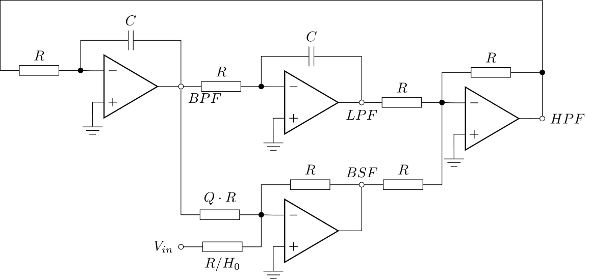
The universal biquad filter consists of two non-inverting amplifiers working as adders in the circuit and two integrators. By setting \(R\) and \(C\) to specific values, the resonance frequency can be chosen. Other parameters adjustable in the universal biquad filter are the quality factor \(Q\) and the low-frequency gain \(H_0\). The quality factor and low-frequency gain determine the frequency response peaks of the low pass filter and the band pass filter. [1]
8.1.2 Characteristics
As the universal biquad filter is a second order filter with the specified outputs low pass, high pass, band pass, and band stop, each filter option can be described with a tranfer function on system level. The general second order transfer function is:
\[ H(s) = \frac{a_1 s^2 + b_1 s + c_1}{a_2 s^2 + b_2 s + c_2} \tag{8.1}\]
The coeffcients can be choosen so, that different responses, like low pass, high pass, band pass, and band stop are achieved.
In filter design a variant of this generalized transfer function is often choosen because it is easier describe the system by quality factor and angular frequency. Equation 8.2 is an exemplatory low pass filter with a transfer function specified for filter design. [3]
\[ H(s) = \frac{\omega_n^2}{s^2 + \frac{\omega_n}{Q} s + \omega_n^2} \tag{8.2}\]
\(Q\) determines amoung other things the amount of peaking the transfer function has at the chosen frequency. Figure 8.2 shows this graphically, the amout of peaking increases with increasing quality factor \(Q\).
Code
# Behavioral Analysis Biquad Filter
import numpy as np
import matplotlib.pyplot as plt
# Initial values
f0 = 1e3 # Resonance frequency in Hz
w0 = 2 * np.pi * f0 # Angular frequency in rad/s
Q1 = 1 # Quality factor
Q2 = 2
Q3 = 5
Q4 = 10
Q5 = 100
H0 = 1 # Play around with this later
# Logarithmic frequency axis
frequencies = np.logspace(2, 4, 10000) # Frequency from 10^2 to 10^4 Hz
s = 1j * 2 * np.pi * frequencies # Laplace-Variable s = jω
############################################
# Transfer functions of Active Filters
############################################
### Numerator
# Low Pass Filter
b_lp = H0
# High Pass Filter
#b_hp = (H0 * (s**2 / w0**2))
# Band Pass Filter
#b_bp = (-H0 * (s / w0))
# Band Stop Filter
#b_bs = -((1 + (s**2 / (w0**2))) * H0)
# Denominator -> for all filters the same
a0 = 1
a1_1 = (s / (w0 * Q1))
a1_2 = (s / (w0 * Q2))
a1_3 = (s / (w0 * Q3))
a1_4 = (s / (w0 * Q4))
a1_5 = (s / (w0 * Q5))
a2 = (s**2 / (w0**2))
den1 = a0 + a1_1 + a2
den2 = a0 + a1_2 + a2
den3 = a0 + a1_3 + a2
den4 = a0 + a1_4 + a2
den5 = a0 + a1_5 + a2
############################################
# Calculation of the transfer functions H(s)
############################################
Hs_lp_1 = b_lp / den1
Hs_lp_2 = b_lp / den2
Hs_lp_3 = b_lp / den3
Hs_lp_4 = b_lp / den4
Hs_lp_5 = b_lp / den5
#Hs_hp = b_hp / den
#Hs_bp = b_bp / den
#Hs_bs = b_bs / den
# Bode Diagram
fig, axs = plt.subplots(2)
#fig.suptitle("frequency response of biquad filter")
# Low Pass Filter
axs[0].semilogx(frequencies, 20 * np.log10(np.abs(Hs_lp_1)), label='$Q = 1$')
axs[1].semilogx(frequencies, np.unwrap(np.angle(Hs_lp_1)) * (180 / np.pi), label='$Q = 1$')
axs[0].semilogx(frequencies, 20 * np.log10(np.abs(Hs_lp_2)), label='$Q = 2$')
axs[1].semilogx(frequencies, np.unwrap(np.angle(Hs_lp_2)) * (180 / np.pi), label='$Q = 2$')
axs[0].semilogx(frequencies, 20 * np.log10(np.abs(Hs_lp_3)), label='$Q = 5$')
axs[1].semilogx(frequencies, np.unwrap(np.angle(Hs_lp_3)) * (180 / np.pi), label='$Q = 5$')
axs[0].semilogx(frequencies, 20 * np.log10(np.abs(Hs_lp_4)), label='$Q = 10$')
axs[1].semilogx(frequencies, np.unwrap(np.angle(Hs_lp_4)) * (180 / np.pi), label='$Q = 10$')
axs[0].semilogx(frequencies, 20 * np.log10(np.abs(Hs_lp_5)), label='$Q = 100$')
axs[1].semilogx(frequencies, np.unwrap(np.angle(Hs_lp_5)) * (180 / np.pi), label='$Q = 100$')
'''
# High Pass Filter
axs[0].semilogx(frequencies, 20 * np.log10(np.abs(Hs_hp)), label='high pass')
axs[1].semilogx(frequencies, np.unwrap(np.angle(Hs_hp)) * (180 / np.pi), label='high pass')
# Band Pass Filter
axs[0].semilogx(frequencies, 20 * np.log10(np.abs(Hs_bp)), label='band pass')
axs[1].semilogx(frequencies, np.unwrap(np.angle(Hs_bp)) * (180 / np.pi), label='band pass')
# Band Stop Filter
axs[0].semilogx(frequencies, 20 * np.log10(np.abs(Hs_bs)), label='band stop')
axs[1].semilogx(frequencies, (np.angle(Hs_bs)) * (180 / np.pi), label='band stop')
'''
#axs[0].title("amplitude response")
axs[0].set_xlabel("frequency/Hz")
axs[0].set_ylabel("amplitude/dB")
#axs[0].set_ylim(-50, 25)
axs[0].grid(True, which="both", ls="--")
axs[0].legend(loc=1)
#axs[1].title("phase response")
axs[1].set_xlabel("frequency/Hz")
axs[1].set_ylabel("phase/deg")
axs[1].grid(True, which="both", ls="--")
axs[1].legend()
plt.tight_layout()
#plt.show()
plt.savefig('images/sec_theorectical_background/lowPassDifferentQ.png', format='png', dpi=1000)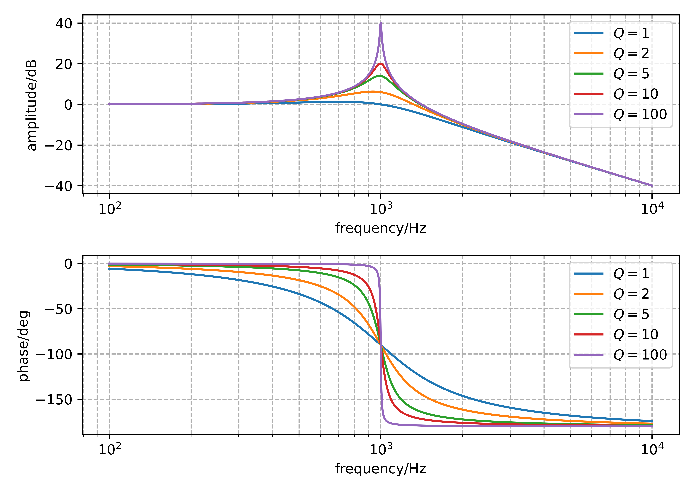
The height of the peak can be calculated with:
\[ A_{peak} = \frac{Q}{\sqrt{1 - \frac{1}{4Q^2}}} \tag{8.3}\]
For \(Q = 100\) the peak is \(A_{peak} = 100.001\), which converted into dB is \(A_{peak,dB} = 40\,dB\), as is shown in Figure 8.2.
8.2 Operational Amplifier
As seen in Figure 8.1, a Biquad Filter consists of four Operational Amplifiers. To get a better understanding of these, this chapter will discuss the main aspects of OPAMPs. There are different types of operational amplifiers that differ, for example, by their low- or high-impedance inputs and outputs. According to Schmid, there exist nine different types of the Opamps, but only four are mainly used [5]. This is because almost always, the non-inverting (positive) input is designed as a high-impedance voltage input. The inverting (negative) input can either be a high-impedance voltage input or a low-impedance current input, depending on the type. Accordingly, the output can be either a low-impedance voltage output or a high-impedance current output. This results in four basic configurations, as shown in the accompanying table Table 8.1. (Images are taken from [6])
| Voltage output | Current output | |
|---|---|---|
| Voltage input | Voltage-Feedback Amplifiers | Operational Transconductance Amplifier |
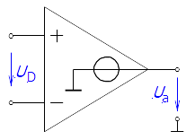 |
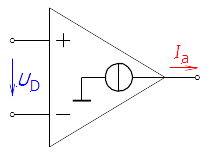 |
|
| Current input | Current-Feedback Amplifiers | Current Amplifier |
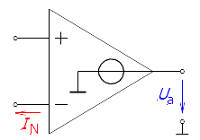 |
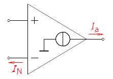 |
Tip
As a general rule, the simplest circuit that can do a job is usually the best choice. [7]
8.2.1 Voltage-Feedback Amplifiers (VFA)
When discussing operational amplifiers (OPAMPs), most sources refer to the Voltage-Feedback Amplifier. These VFAs are voltage-controlled voltage sources, essentially acting as voltage boosters. They are characterized by a high-impedance input for both the non-inverting and inverting terminals, and a low-impedance voltage output. To realize various desired circuits, such as amplification, integration, addition/subtraction, etc…, these functions should ideally be achieved only through the surrounding circuitry. To meet this requirement, three main requirements need be satisfied:
- Extremely High Voltage Gain: Typically ranging from 60 to 120 dB (or gain factor of \(10^4\) to \(10^6\)), this gain should be available over a wide frequency range.
- High Impedance at Differential Inputs: Ensuring minimal loading of the signal source.
- Low Impedance at the Output: Allowing the amplifier to drive various loads without significant voltage drop.
TipDifference between a voltage source and a current source
Voltage source
A voltage source creates a constant voltage output by changing the current.
Current source A current source creates a constant current by changing the voltage.
Both of this sources can be explained by Ohm’s Law: \(R = \frac{U}{I}\).
For example the voltage source: There is no influence of the load, so \(R\) may change and its value is unknown to the source. So to keep the voltage stable we can only change the current.
8.2.2 Operational Transconductance Amplifier (OTA)
In the design process of the biquad only OTAs will be used, so the focus of this chapter will be on them. The operational transconductance amplifier puts out out a current proportional to its input voltage, unlike Voltage Feedback Amplifiers Section 8.2.1. In other words, an OTA is a voltage controlled current source.
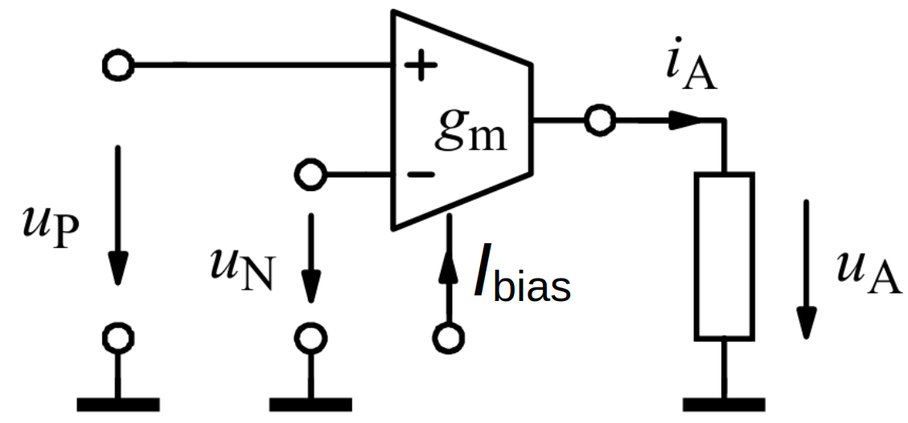
As seen in the figure Figure 8.3, the OTA has the two differental inputs and a current output. On top of that it has a biasing current input \(I_{bias}\) which controls the transconductance \(g_m\) of the OTA.
8.2.2.1 Transconductance
Transconductance is a fundamental parameter that describes the relationship between the input voltage and the output current in electronic devices, particularly in transistors. It is defined as the ratio of the change in output current to the change in input voltage, under conditions where all other variables are held constant. Mathematically, it is expressed as:
\[ g_m = \frac{\Delta I_{out}}{\Delta V_{in}} \]
where \(g_m\) is the transconductance, \(\Delta I_{out}\) is the change in output current, and \(\Delta V_{in}\) is the change in input voltage. The unit of transconductance is the siemens (\(S\)), which is equivalent to amperes per volt (\(A\)/\(V\)). Historically, it was also measured in “mho”, which is “ohm” spelled backwards, reflecting its inverse relationship to resistance.
In field-effect transistors (FETs) the transconductance determines the device’s ability to amplify signals. A higher transconductance value indicates a stronger amplification capability, as a small change in input voltage can result in a significant change in output current.
NoteOrigin of the term transconductance
The term transconductance originates from the concept of transfer conductance. It combines the ideas of transfer, indicating the transfer of a signal from the input to the output, and conductance, which is the inverse of resistance and measures how easily a material conducts electric current. In essence, transconductance describes how effectively a device can convert a voltage change at its input into a proportional current change at its output. [9]
8.2.2.2 5-Transistor OTA
[7] introduces a basic 5-Transistor OTA as a design proposal for a real circuits.
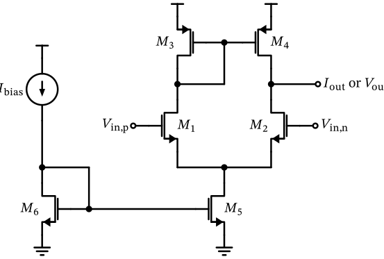
It consists of few elements which are going to be described in the next chapters. The basic function of this OTA can be described with: The transistors \(M_1\) and \(M_2\) form a differential pair, which is biased by the current source \(M_5\). Transistors \(M_5\) and \(M_6\) create a current mirror, where the input bias current \(I_{\text{bias}}\) sets the bias current for the Operational Transconductance Amplifier. To keep the biasing current stable, a current mirror (Section 8.2.3) is used instead of applying the \(I_{\text{bias}}\) directly to \(M_5\). The differential pair (Section 8.2.4) \(M_1\) and \(M_2\) is loaded by the current mirror \(M_3\) and \(M_4\), which mirrors the drain current of \(M_1\) to the right side of the circuit. The combined currents from \(M_4\) and \(M_2\) at the output node result in the generation of an output current. To achieve this desired result, it is important to ensure that \(M_{1,2}\) and \(M_{3,4}\) are symmetric, meaning they should have identical \(W\) (width) and \(L\) (length) dimensions. To set the right bias current, \(M_{5,6}\) should be chosen accordingly.
8.2.3 Current Mirror
A current mirror consists of at least two transistors, one working as the input (reference) source and the other ones as copies of it. As the name suggests, the primary function of a current mirror is to copy the input current to the output, ensuring that the output current is an exact duplicate of the input. Importantly, the flow of the input current is unaffected by the size of the mirrored output current or any variations in it.
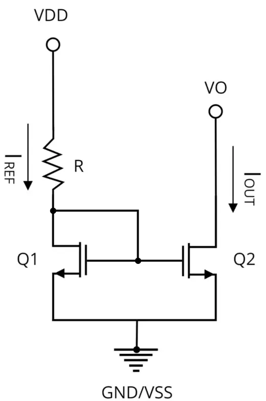
This behavior is made possible by two key characteristics of the current mirror: its relatively low input resistance and its relatively high output resistance. The low input resistance ensures the input current remains stable regardless of drive conditions, and the high output resistance maintains a constant output current independent of load variations. ([11])
A current mirror is also capable of copying one current and converting it to multiple different outputs. This is possible by attaching more transistors with their gate \(G\) to the drain \(D\) of the reference transistor. By scaling the width and length of each output transistor differently, multiple scales of the input current can be created. Hereby, a big advantage is when using MOSFETs, due to the fact that no current is flowing through the gate. In the case of BJTs, a compensation circuit is added. ([7])
8.2.4 Differential Pair
A differential pair, also referred to as a differential amplifier, is an electronic circuit designed to compare the difference between two input voltages while minimizing any voltage that is common to both inputs. It consists of two transistors and can have two inputs and two outputs, as seen in Figure 8.6.
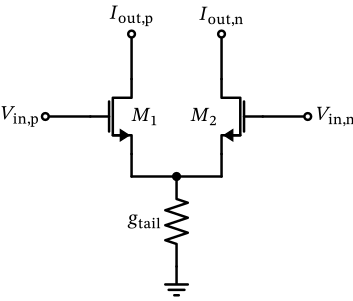
Its primary function is to amplify the difference between two input signals while rejecting any common-mode signals, which are identical in both amplitude and phase at the two inputs. This property makes the differential pair highly effective in noise reduction and signal processing applications. In a typical differential pair using MOSFETs, the two transistors are matched in terms of their electrical characteristics, such as threshold voltage \(V_{th}\) and transconductance \(g_m\). The inputs are applied to the gates \(G\) of the MOSFETs, while the outputs are taken from the drains \(D\). A current source is usually connected to the sources \(S\) of the MOSFETs to provide a constant bias current, here noted as \(g_{\text{tail}}\) or like in Figure 8.4 as \(I_{\text{bias}}\).
The differential gain of the pair is determined by the transconductance \(g_m\) of the MOSFETs. The common-mode rejection ratio (CMRR) is a measure of the differential pair’s ability to reject common-mode signals. It is defined as the ratio of the differential gain to the common-mode gain and is typically expressed in decibels (dB). The performance of the differential pair is also influenced by the tail current source, represented by \(g_{\text{tail}}\). The tail current source provides a constant bias current \(I_{\text{bias}}\) that flows through both transistors, ensuring that the total current through the differential pair remains constant regardless of the input voltages. ([4])
ImportantRole in an OTA
When used in OTAs, the differential pair serves as the input stage, where the differential input voltage is converted into a differential current.
8.3 MOSFET (Metal-Oxide-Semiconductor Field-Effect-Transistor )
To dive in one more level, the parts an operational amplifier is build of are transistors. Precisely in this design process they are (MOSFETs). In integrated circuit design, where pre-built components are not available, MOSFETs can be designed from scratch. This design flexibility allows for the adjustment of the MOSFET’s physical dimensions, specifically its width \(W\) and length \(L\). By doing this there is a lot of room for freedom and experimental space. The length \(L\) significantly influences MOSFET performance, enabling a trade-off between speed and output conductance. The width \(W\) of a MOSFET acts as a scaling factor that adjusts the charge density within the channel, enabling the control of current levels to meet specific design requirements.
WarningCircuit symbol of MOSFETs
In the literature, the circuit symbol of MOSFETs is not uniform. Some denote them with a small arrow between the gate (\(G\)) and source (\(S\)), which is not very precise due to the fact MOSFETs are symmetric. This means that the drain (\(D\)) and source (\(S\)) can be interchanged, and the names are only defined to make circuits clearer. Therefore, an accurate symbol for the n-MOS (shown in Figure 8.7) and p-MOS (shown in Figure 8.8) is shown in the following figures taken from [7]:
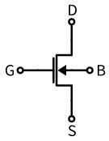
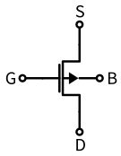
However, in this development report, the symbols are not strictly used like shown here. But all of the used figures are based on this symmetric model of a MOSFET.
Besides, in many situations the bulk \(B\) is connected to the source \(S\) terminal. Thus the bulk \(B\) is not mentioned in the circuit diagrams.
8.3.1 MOSFET Large-Signal Regions
A MOSFET can operate in three different modes: Saturation, Linear (or Triode) region, or Cutoff. The modes depend on the device’s threshold voltage \(V_{\text{th}}\), gate-to-source voltage \(V_{\text{GS}}\), and drain-to-source voltage \(V_{\text{DS}}\).
Saturation
The saturation region is the active mode used for analog amplification, where the MOSFET behaves like a voltage-controlled current source. A conductive channel forms between the source and drain. This state is reached when the condition \(V_{\text{DS}} \geq (V_{\text{GS}} - V_{\text{th}})\) is met. In saturation, the drain-source current (\(I_D\)) stabilizes or “saturates” and becomes nearly independent of \(V_{\text{DS}}\). However, it can still be precisely controlled via \(V_{\text{GS}}\) due to the phenomenon known as “pinch-off”.
Linear Region
The Linear, or Triode, region occurs when a MOSFET is conducting and acts more like a resistor or voltage-controlled device rather than a current source. This region is defined by the condition \(V_{\text{DS}} < (V_{\text{GS}} - V_{\text{th}})\) and \(V_{\text{GS}} > V_{\text{th}}\). In this mode, both \(V_{\text{GS}}\) and \(V_{\text{DS}}\) control the \(I_D\), allowing the device to be used effectively for switching and amplification in low-voltage applications.
Cutoff Region
In the cutoff region, the MOSFET is effectively turned off, with no conductive channel formed between the drain and source. This mode is reached when the gate-to-source voltage is less than the threshold voltage (\(V_{\text{GS}} < V_{\text{th}}\)). In cutoff, the drain-source current \(I_D\) is nearly zero, which means the MOSFET is not conducting and behaves like an open switch.
Warning
In the large-signal analysis, the transitions between operating modes occur gradually, making it challenging to pinpoint an exact moment when one mode shifts to another. Consequently, the modes are used in a more approximate manner, reflecting the continuous nature of these transitions rather than distinct, sharply defined states.
8.3.2 Small-Signal Representation
By applying different voltages to a MOSFET, different behaviours appear. But there is one thing which is very unliked by engineers and others, all these transfer functions are non linear. So making any calculations by hand is nearly impossible. That’s why in practise the biasing method exists. This is done by applying a dc voltage to the terminals of the MOSFET and during operation only a small signal change appears. With this technique an Operating Point is created, which enables to assume a linear behaviour in its small signal area (like in Figure 8.9). Because the MOSFET is put into an small operation point and all the changes applied are very small, this linearisation area is called Small-signal model.
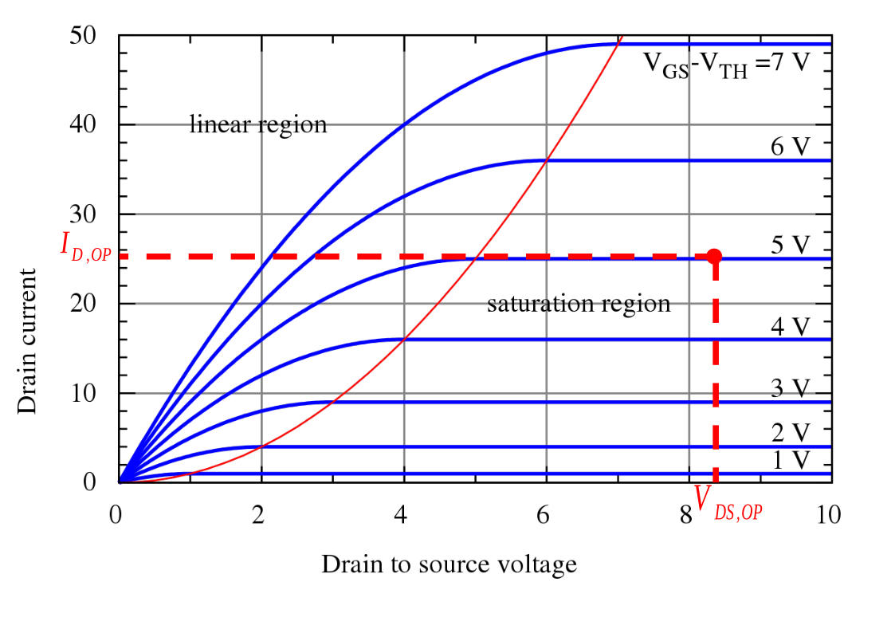
ImportantImportant variables
- \(I_D\): The drain current
- \(I_{\text{bias}}\): The biasing current. The current to adjust the operating point
- \(V_{GS}\): The gate-to-source voltage
- \(V_{DS}\): The drain-to-source voltage
- \(V_{th}\): The threshold voltage. A critical parameter that defines the minimum gate-to-source voltage \(V_{GS}\) required to form a conductive channel between the source and drain
- \(V_{OV}\): The overdrive voltage. the difference between the gate-to-sourcevoltage \(V_{GS}\) and the threshold voltage \(V_{th}\).
- \(g_m\): The transconductance. The ratio between the output current and input voltage
8.3.2.1 Capacitances in MOSFETs
Gate-Source Capacitance (\(C_{gs}\)):
\(C_{gs}\) is the capacitance between the gate and source terminals. This arises due to the physical overlap of the gate and source regions, as well as the insulating oxide layer between them. \(C_{gs}\) affects both the input impedance and the switching speed. Higher \(C_{gs}\) values can slow down the switching process because more charge needs to be moved to change the gate voltage.
Gate-Drain Capacitance (\(C_{gd}\)):
\(C_{gd}\) is the capacitance between the gate and drain terminals. People also know it as the Miller capacitance because of its significant impact on the Miller effect. The Miller effect amplifies the effective value of \(C_{gd}\), making it a critical factor in determining the high-frequency behaviour of the MOSFET. This capacitance can cause phase shifts and affect the stability of the circuit, particularly in amplifiers.
Drain-Source Capacitance (\(C_{ds}\)):
\(C_{ds}\) is the capacitance between the drain and source terminals. It arises due to the depletion region between the drain and source regions. \(C_{ds}\) affects the output impedance and frequency response of the circuit. Higher drain-source capacitance can lead to increased output capacitance, affecting the switching speed and introducing additional losses.
8.3.2.2 Transconductances in MOSFET
Output Conductance (\(g_{ds})\)
\(g_{ds}\) represents the small-signal conductance between the drain and source terminals of the MOSFET. It expresses how the drain current \(I_D\) changes with respect to the drain-source voltage \(V_{ds}\) when the gate-source voltage \(V_{gs}\) is held constant. Mathematically, it is defined as follows:
\(g_{ds}=\frac{\partial I_D}{\partial V_{ds}}\bigg|_{V_{gs}=\text{constant}}\)
\(g_{ds}\) affects the output impedance of the MOSFET. A higher \(g_{ds}\) results in a lower output impedance.In saturation region, \(g_{ds}\) is typically small, which helps maintain the linearity of the device. However, in the triode region, \(g_{ds}\) can be larger, leading to non-linear behaviour.
Mutual Transconductance - Gate-Source Voltage (\(g_mv_{gs}\))
The transconductance \(g_m\) of a MOSFET quantifies how the drain current \(I_D\) varies in response to changes in the gate-source voltage \(V_{gs}\), while keeping the drain-source voltage \(V_{ds}\) constant:
\(g_m=\frac{\partial I_D}{\partial V_{gs}}\bigg|_{V_{ds}=\text{constant}}\)
The term \(g_mv_{gs}\) represents the small-signal current generated by the transconductance \(g_m\) in response to a small change in the gate-source voltage \(v_{gs}\). A higher \(g_m\) results in a higher voltage gain.
NoteSummary of \(g_mv_{gs}\)
In the saturation region, the output conductance \(g_{ds}\) is generally much smaller than the transconductance \(g_m\). This characteristic enables the MOSFET to function effectively as a voltage-controlled current source. However, as the MOSFET moves into the triode region, \(g_{ds}\) increases, causing the device to behave more like a resistor. The output conductance \(g_{ds}\) influences the output impedance and linearity of the device, while the product \(g_mv_{gs}\) controls the gain and frequency response of the circuit.
9 Characterisation
This chapter is about characterising the biquad filter with the help of computational software like python and and comparing that with ideal circuit simulations. The comparison between a mathematical approach and a basic circuit implementation, gives a first impression if the filter is operational.
9.1 Behauvioural Analysis and macro modelling
The behauvioural analysis is done through macro modelling the universal biquad filter as a system. The system can be described with transfer functions and modelled with python.
9.1.1 Transfer Functions and frequency response
The ASLK PRO Manual [1] provides the transfer functions of the four filter outputs: low pass, high pass, band pass, and band stop. The transfer functions are adaptations of the general second order transfer function as seen in Equation 8.1. [3]
In the following transfer function the input and output voltage are referenced according to Figure 8.1. The sections only contain their specific transfer function and frequency response.
Low pass
The output if the low pass filter is marked in the circuit (Figure 8.1) as \(LPF\) and corresponds to \(V_{03}\) in the transfer function Equation 9.1.
\[ \frac{V_{03}}{V_i} = \frac{H_0}{\left( 1 + \frac{s}{\omega_0 Q} + \frac{s^2}{\omega_0^2} \right)} \tag{9.1}\]
Figure 9.1 shows the amplitude and phase response of the low pass filter. The required frequency \(f_0 = 1\,kHz\) and quality factor \(Q = 10\) recognizable in the bode plot. As the dc-gain was chosen to be \(H_0 = 1\), the low pass filter has a amplitude amplification of 1 in the lower frequencies.
#| label: lst-freqResponseLowpass
#| code-fold: true
#| output: false
# Behavioral Analysis Biquad Filter
import numpy as np
import matplotlib.pyplot as plt
# Initial values
f0 = 1e3 # Resonance frequency in Hz
w0 = 2 * np.pi * f0 # Angular frequency in rad/s
Q = 10 # Quality factor
H0 = 1 # Play around with this later
# Logarithmic frequency axis
frequencies = np.logspace(2, 4, 10000) # Frequency from 10^2 to 10^4 Hz
s = 1j * 2 * np.pi * frequencies # Laplace-Variable s = jω
############################################
# Transfer functions of Active Filters
############################################
### Numerator
# Low Pass Filter
b_lp = H0
# High Pass Filter
b_hp = (H0 * (s**2 / w0**2))
# Band Pass Filter
b_bp = (-H0 * (s / w0))
# Band Stop Filter
b_bs = -((1 + (s**2 / (w0**2))) * H0)
# Denominator -> for all filters the same
a0 = 1
a1 = (s / (w0 * Q))
a2 = (s**2 / (w0**2))
den = a0 + a1 + a2
############################################
# Calculation of the transfer functions H(s)
############################################
Hs_lp = b_lp / den
Hs_hp = b_hp / den
Hs_bp = b_bp / den
Hs_bs = b_bs / den
# Bode Diagram
fig, axs = plt.subplots(2)
#fig.suptitle("frequency response of biquad filter")
# Low Pass Filter
axs[0].semilogx(frequencies, 20 * np.log10(np.abs(Hs_lp)), label='low pass')
axs[1].semilogx(frequencies, np.unwrap(np.angle(Hs_lp)) * (180 / np.pi), label='low pass')
'''
# High Pass Filter
axs[0].semilogx(frequencies, 20 * np.log10(np.abs(Hs_hp)), label='high pass')
axs[1].semilogx(frequencies, np.unwrap(np.angle(Hs_hp)) * (180 / np.pi), label='high pass')
# Band Pass Filter
axs[0].semilogx(frequencies, 20 * np.log10(np.abs(Hs_bp)), label='band pass')
axs[1].semilogx(frequencies, np.unwrap(np.angle(Hs_bp)) * (180 / np.pi), label='band pass')
# Band Stop Filter
axs[0].semilogx(frequencies, 20 * np.log10(np.abs(Hs_bs)), label='band stop')
axs[1].semilogx(frequencies, (np.angle(Hs_bs)) * (180 / np.pi), label='band stop')
'''
#axs[0].title("amplitude response")
axs[0].set_xlabel("frequency/Hz")
axs[0].set_ylabel("amplitude/dB")
axs[0].set_ylim(-50, 25)
axs[0].grid(True, which="both", ls="--")
#axs[0].legend(loc=1)
#axs[1].title("phase response")
axs[1].set_xlabel("frequency/Hz")
axs[1].set_ylabel("phase/deg")
axs[1].grid(True, which="both", ls="--")
#axs[1].legend()
plt.tight_layout()
#plt.show()
plt.savefig("images/sec_characterisation/freqResponseLowpass.png", format="png",dpi=1000)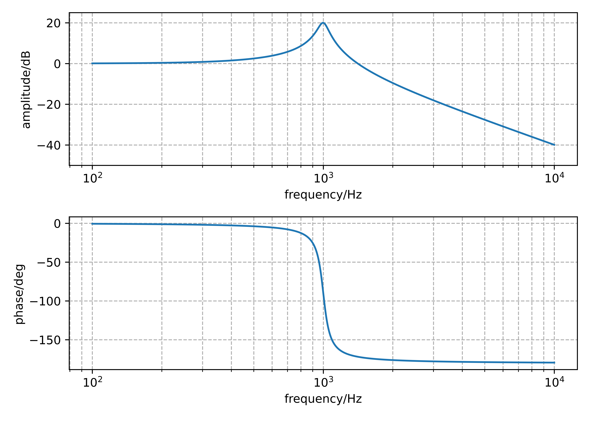
With knowing the dc gain \(H_0 = 1\) and quality factot \(Q = 10\), the amplitude of the peak can be calculated as seen in Equation 8.3. Expression the value in dB, gives peak amplitude of \(A_{peak,dB} = 20.002\,dB\) which corresponds to the peak value seen in Figure 9.1.
High pass
The output if the high pass filter is marked in the circuit (Figure 8.1) as \(HPF\) and corresponds to \(V_{01}\) in the transfer function Equation 9.2.
\[ \frac{V_{01}}{V_i} = \frac{\left( H_0 \cdot \frac{s^2}{\omega_0^2} \right)}{\left( 1 + \frac{s}{\omega_0 Q} + \frac{s^2}{\omega_0^2} \right)} \tag{9.2}\]
Figure 9.2 shows the amplitude and phase response of the high pass filter. The required frequency \(f_0 = 1\,kHz\) and quality factor \(Q = 10\) recognizable in the bode plot. As the dc-gain was chosen to be \(H_0 = 1\), the low pass filter has a amplitude amplification of 1 in the higher frequencies.
#| label: lst-freqResponseHighpass
#| code-fold: true
#| output: false
# Behavioral Analysis Biquad Filter
import numpy as np
import matplotlib.pyplot as plt
# Initial values
f0 = 1e3 # Resonance frequency in Hz
w0 = 2 * np.pi * f0 # Angular frequency in rad/s
Q = 10 # Quality factor
H0 = 1 # Play around with this later
# Logarithmic frequency axis
frequencies = np.logspace(2, 4, 10000) # Frequency from 10^2 to 10^4 Hz
s = 1j * 2 * np.pi * frequencies # Laplace-Variable s = jω
############################################
# Transfer functions of Active Filters
############################################
### Numerator
# Low Pass Filter
b_lp = H0
# High Pass Filter
b_hp = (H0 * (s**2 / w0**2))
# Band Pass Filter
b_bp = (-H0 * (s / w0))
# Band Stop Filter
b_bs = -((1 + (s**2 / (w0**2))) * H0)
# Denominator -> for all filters the same
a0 = 1
a1 = (s / (w0 * Q))
a2 = (s**2 / (w0**2))
den = a0 + a1 + a2
############################################
# Calculation of the transfer functions H(s)
############################################
Hs_lp = b_lp / den
Hs_hp = b_hp / den
Hs_bp = b_bp / den
Hs_bs = b_bs / den
# Bode Diagram
fig, axs = plt.subplots(2)
#fig.suptitle("frequency response of biquad filter")
# Low Pass Filter
#axs[0].semilogx(frequencies, 20 * np.log10(np.abs(Hs_lp)), label='low pass')
#axs[1].semilogx(frequencies, np.unwrap(np.angle(Hs_lp)) * (180 / np.pi), label='low pass')
# High Pass Filter
axs[0].semilogx(frequencies, 20 * np.log10(np.abs(Hs_hp)), label='high pass')
axs[1].semilogx(frequencies, np.unwrap(np.angle(Hs_hp)) * (180 / np.pi), label='high pass')
'''
# Band Pass Filter
axs[0].semilogx(frequencies, 20 * np.log10(np.abs(Hs_bp)), label='band pass')
axs[1].semilogx(frequencies, np.unwrap(np.angle(Hs_bp)) * (180 / np.pi), label='band pass')
# Band Stop Filter
axs[0].semilogx(frequencies, 20 * np.log10(np.abs(Hs_bs)), label='band stop')
axs[1].semilogx(frequencies, (np.angle(Hs_bs)) * (180 / np.pi), label='band stop')
'''
#axs[0].title("amplitude response")
axs[0].set_xlabel("frequency/Hz")
axs[0].set_ylabel("amplitude/dB")
axs[0].set_ylim(-50, 25)
axs[0].grid(True, which="both", ls="--")
#axs[0].legend(loc=1)
#axs[1].title("phase response")
axs[1].set_xlabel("frequency/Hz")
axs[1].set_ylabel("phase/deg")
axs[1].grid(True, which="both", ls="--")
#axs[1].legend()
plt.tight_layout()
#plt.show()
plt.savefig("images/sec_characterisation/freqResponseHighpass.png", format="png", dpi=1000)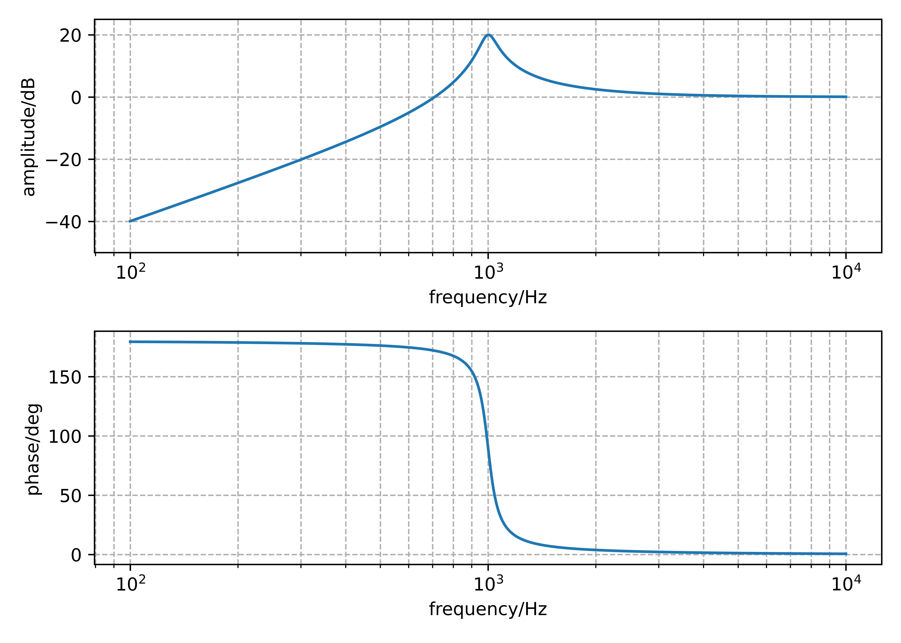
Band pass
The output for the band pass filter is marked as \(BPF\) in Figure 8.1. This denotes the point that is referenced in Equation 9.3 as \(V_{02}\).
\[ \frac{V_{02}}{V_i} = \frac{\left( - H_0 \cdot \frac{s}{\omega_0} \right)}{\left( 1 + \frac{s}{\omega_0 Q} + \frac{s^2}{\omega_0^2} \right)} \tag{9.3}\]
The band pass shown in Figure 9.3 has its center frequency at \(1\,kHz\) as set in the requirements. Similarly to the low pass filter in Figure 9.1 and the high pass filter in Figure 9.2 the amplitude response peaks at this frequency, with its peak influenced by the quality factor.
#| label: lst-freqResponseBandpass
#| code-fold: true
#| output: false
# Behavioral Analysis Biquad Filter
import numpy as np
import matplotlib.pyplot as plt
# Initial values
f0 = 1e3 # Resonance frequency in Hz
w0 = 2 * np.pi * f0 # Angular frequency in rad/s
Q = 10 # Quality factor
H0 = 1 # Play around with this later
# Logarithmic frequency axis
frequencies = np.logspace(2, 4, 10000) # Frequency from 10^2 to 10^4 Hz
s = 1j * 2 * np.pi * frequencies # Laplace-Variable s = jω
############################################
# Transfer functions of Active Filters
############################################
### Numerator
# Low Pass Filter
b_lp = H0
# High Pass Filter
b_hp = (H0 * (s**2 / w0**2))
# Band Pass Filter
b_bp = (-H0 * (s / w0))
# Band Stop Filter
b_bs = -((1 + (s**2 / (w0**2))) * H0)
# Denominator -> for all filters the same
a0 = 1
a1 = (s / (w0 * Q))
a2 = (s**2 / (w0**2))
den = a0 + a1 + a2
############################################
# Calculation of the transfer functions H(s)
############################################
Hs_lp = b_lp / den
Hs_hp = b_hp / den
Hs_bp = b_bp / den
Hs_bs = b_bs / den
# Bode Diagram
fig, axs = plt.subplots(2)
#fig.suptitle("frequency response of biquad filter")
'''
# Low Pass Filter
axs[0].semilogx(frequencies, 20 * np.log10(np.abs(Hs_lp)), label='low pass')
axs[1].semilogx(frequencies, np.unwrap(np.angle(Hs_lp)) * (180 / np.pi), label='low pass')
# High Pass Filter
axs[0].semilogx(frequencies, 20 * np.log10(np.abs(Hs_hp)), label='high pass')
axs[1].semilogx(frequencies, np.unwrap(np.angle(Hs_hp)) * (180 / np.pi), label='high pass')
'''
# Band Pass Filter
axs[0].semilogx(frequencies, 20 * np.log10(np.abs(Hs_bp)), label='band pass')
axs[1].semilogx(frequencies, np.unwrap(np.angle(Hs_bp)) * (180 / np.pi), label='band pass')
# Band Stop Filter
#axs[0].semilogx(frequencies, 20 * np.log10(np.abs(Hs_bs)), label='band stop')
#axs[1].semilogx(frequencies, (np.angle(Hs_bs)) * (180 / np.pi), label='band stop')
#axs[0].title("amplitude response")
axs[0].set_xlabel("frequency/Hz")
axs[0].set_ylabel("amplitude/dB")
axs[0].set_ylim(-50, 25)
axs[0].grid(True, which="both", ls="--")
#axs[0].legend(loc=1)
#axs[1].title("phase response")
axs[1].set_xlabel("frequency/Hz")
axs[1].set_ylabel("phase/deg")
axs[1].grid(True, which="both", ls="--")
#axs[1].legend()
plt.tight_layout()
#plt.show()
plt.savefig("images/sec_characterisation/freqResponseBandpass.png", format="png", dpi=1000)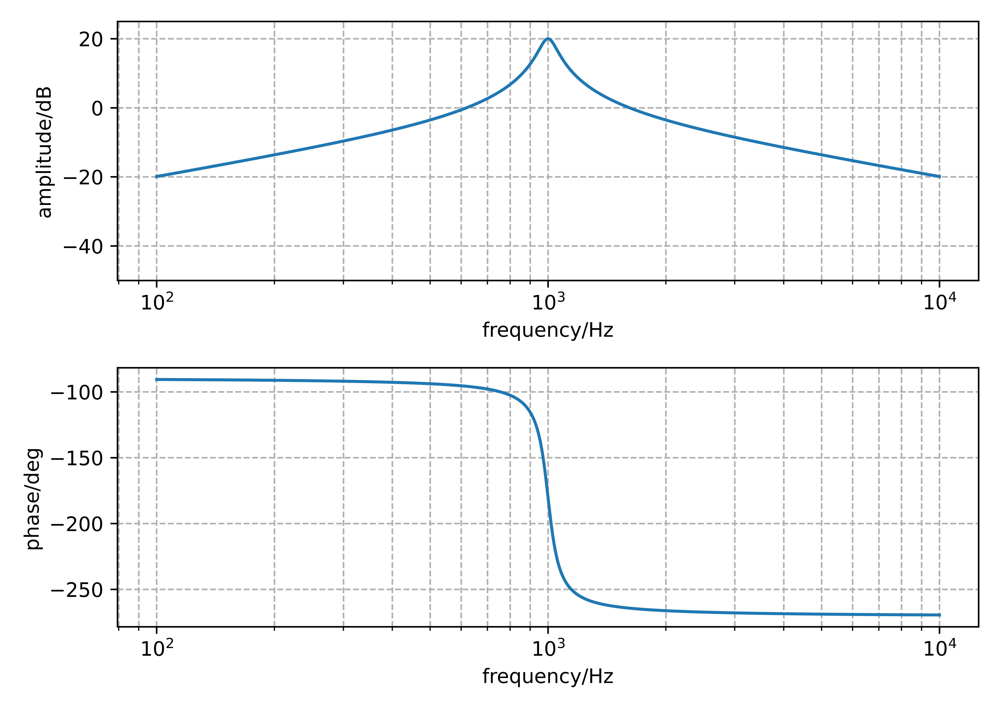
Band stop
The output for the band stop filter is marked in Figure 8.1 as \(BSF\) and in the transfer function as \(V_{04}\).
\[ \frac{V_{04}}{V_i} = \frac{\left( 1 + \frac{s^2}{\omega_0^2} \right) \cdot H_0}{\left( 1 + \frac{s}{\omega_0 Q} + \frac{s^2}{\omega_0^2} \right)} \tag{9.4}\]
[12] argues that Equation 9.4 from the ASLK PRO Manual [1] is incorrect, as using that equation produces inconsistent results. Using the negated form of Equation 9.4 as seen in Equation 9.5 seems to produce the correct output. Therefore Equation 9.5 will be used for further analysis.
\[ \frac{V_{04}}{V_i} = - \frac{\left( 1 + \frac{s^2}{\omega_0^2} \right) \cdot H_0}{\left( 1 + \frac{s}{\omega_0 Q} + \frac{s^2}{\omega_0^2} \right)} \tag{9.5}\]
Figure 9.4 shows the frequency response of the band stop, with its center frequency at \(1\,kHz\).
#| label: lst-freqResponseBandstop
#| code-fold: true
#| output: false
# Behavioral Analysis Biquad Filter
import numpy as np
import matplotlib.pyplot as plt
# Initial values
f0 = 1e3 # Resonance frequency in Hz
w0 = 2 * np.pi * f0 # Angular frequency in rad/s
Q = 10 # Quality factor
H0 = 1 # Play around with this later
# Logarithmic frequency axis
frequencies = np.logspace(2, 4, 10000) # Frequency from 10^2 to 10^4 Hz
s = 1j * 2 * np.pi * frequencies # Laplace-Variable s = jω
############################################
# Transfer functions of Active Filters
############################################
### Numerator
# Low Pass Filter
b_lp = H0
# High Pass Filter
b_hp = (H0 * (s**2 / w0**2))
# Band Pass Filter
b_bp = (-H0 * (s / w0))
# Band Stop Filter
b_bs = -((1 + (s**2 / (w0**2))) * H0)
# Denominator -> for all filters the same
a0 = 1
a1 = (s / (w0 * Q))
a2 = (s**2 / (w0**2))
den = a0 + a1 + a2
############################################
# Calculation of the transfer functions H(s)
############################################
Hs_lp = b_lp / den
Hs_hp = b_hp / den
Hs_bp = b_bp / den
Hs_bs = b_bs / den
# Bode Diagram
fig, axs = plt.subplots(2)
#fig.suptitle("frequency response of biquad filter")
'''
# Low Pass Filter
axs[0].semilogx(frequencies, 20 * np.log10(np.abs(Hs_lp)), label='low pass')
axs[1].semilogx(frequencies, np.unwrap(np.angle(Hs_lp)) * (180 / np.pi), label='low pass')
# High Pass Filter
axs[0].semilogx(frequencies, 20 * np.log10(np.abs(Hs_hp)), label='high pass')
axs[1].semilogx(frequencies, np.unwrap(np.angle(Hs_hp)) * (180 / np.pi), label='high pass')
# Band Pass Filter
axs[0].semilogx(frequencies, 20 * np.log10(np.abs(Hs_bp)), label='band pass')
axs[1].semilogx(frequencies, np.unwrap(np.angle(Hs_bp)) * (180 / np.pi), label='band pass')
'''
# Band Stop Filter
axs[0].semilogx(frequencies, 20 * np.log10(np.abs(Hs_bs)), label='band stop')
axs[1].semilogx(frequencies, (np.angle(Hs_bs)) * (180 / np.pi), label='band stop')
#axs[0].title("amplitude response")
axs[0].set_xlabel("frequency/Hz")
axs[0].set_ylabel("amplitude/dB")
axs[0].set_ylim(-50, 25)
axs[0].grid(True, which="both", ls="--")
#axs[0].legend(loc=1)
#axs[1].title("phase response")
axs[1].set_xlabel("frequency/Hz")
axs[1].set_ylabel("phase/deg")
axs[1].grid(True, which="both", ls="--")
#axs[1].legend()
plt.tight_layout()
#plt.show()
plt.savefig("images/sec_characterisation/freqResponseBandstop.png", format="png", dpi=1000)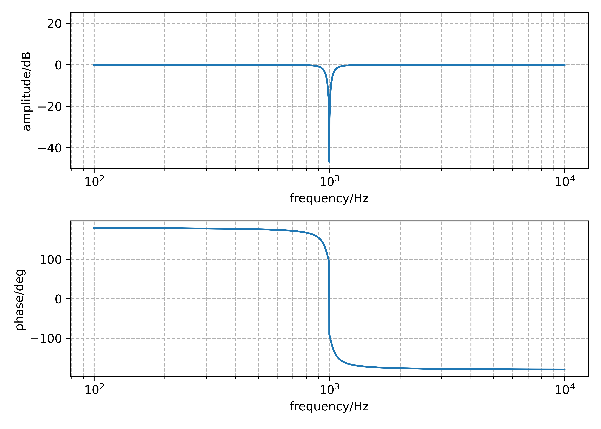
Comparison
Figure 9.5 shows all four frequency responses together in oen graph. It shows nicely that all three pass filters peak at the same freqeuncy and the same height. Comparing this plot with the one from [1] gives reason to argue that the filter design on a theoretic system level should work.
#| label: lst-freqResponseFilter
#| code-fold: true
#| output: false
# Behavioral Analysis Biquad Filter
import numpy as np
import matplotlib.pyplot as plt
# Initial values
f0 = 1e3 # Resonance frequency in Hz
w0 = 2 * np.pi * f0 # Angular frequency in rad/s
Q = 10 # Quality factor
H0 = 1 # Play around with this later
# Logarithmic frequency axis
frequencies = np.logspace(2, 4, 10000) # Frequency from 10^2 to 10^4 Hz
s = 1j * 2 * np.pi * frequencies # Laplace-Variable s = jω
############################################
# Transfer functions of Active Filters
############################################
### Numerator
# Low Pass Filter
b_lp = H0
# High Pass Filter
b_hp = (H0 * (s**2 / w0**2))
# Band Pass Filter
b_bp = (-H0 * (s / w0))
# Band Stop Filter
b_bs = -((1 + (s**2 / (w0**2))) * H0)
# Denominator -> for all filters the same
a0 = 1
a1 = (s / (w0 * Q))
a2 = (s**2 / (w0**2))
den = a0 + a1 + a2
############################################
# Calculation of the transfer functions H(s)
############################################
Hs_lp = b_lp / den
Hs_hp = b_hp / den
Hs_bp = b_bp / den
Hs_bs = b_bs / den
# Bode Diagram
fig, axs = plt.subplots(2)
#fig.suptitle("frequency response of biquad filter")
# Low Pass Filter
axs[0].semilogx(frequencies, 20 * np.log10(np.abs(Hs_lp)), label='low pass')
axs[1].semilogx(frequencies, np.unwrap(np.angle(Hs_lp)) * (180 / np.pi), label='low pass')
# High Pass Filter
axs[0].semilogx(frequencies, 20 * np.log10(np.abs(Hs_hp)), label='high pass')
axs[1].semilogx(frequencies, np.unwrap(np.angle(Hs_hp)) * (180 / np.pi), label='high pass')
# Band Pass Filter
axs[0].semilogx(frequencies, 20 * np.log10(np.abs(Hs_bp)), label='band pass')
axs[1].semilogx(frequencies, np.unwrap(np.angle(Hs_bp)) * (180 / np.pi), label='band pass')
# Band Stop Filter
axs[0].semilogx(frequencies, 20 * np.log10(np.abs(Hs_bs)), label='band stop')
axs[1].semilogx(frequencies, (np.angle(Hs_bs)) * (180 / np.pi), label='band stop')
#axs[0].title("amplitude response")
axs[0].set_xlabel("frequency/Hz")
axs[0].set_ylabel("amplitude/dB")
axs[0].set_ylim(-50, 25)
axs[0].grid(True, which="both", ls="--")
axs[0].legend(loc=1)
#axs[1].title("phase response")
axs[1].set_xlabel("frequency/Hz")
axs[1].set_ylabel("phase/deg")
axs[1].grid(True, which="both", ls="--")
axs[1].legend()
plt.tight_layout()
#plt.show()
plt.savefig("images/sec_characterisation/freqResponseFilter.png", format="png", dpi=1000)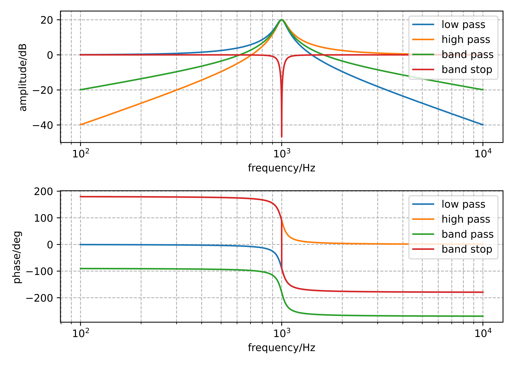
9.1.2 Stability
The stability of the biquad is checked at different hierarchical levels. The first analysis considers the system from a theorectical standpoint with transfer functions, and checks if conceptual design of the biquad filter is stable. On a component level the stability of the integrators and adders is analyzed, to verify that the chosen values for resistors and capcitors do not induce oscillations through the feedback loop.
9.1.2.1 System stability
A system is stable if its impulse response is absolutley integrateable. In case of a given transfer function, this can also be checked by calculating the poles of the transfer function. If all the poles lay in the left half of the s-plane, the system is considered stable. There is a special case where single poles can lay on the \(j\omega\)-axis, on their own or in combination with poles in the left half of the s-plane. Systems which fall under that, are called marginally stable. [13]
9.1.2.2 Pole-zero plot
#| label: lst-poleZeroStability
#| code-fold: true
#| output: false
import numpy as np
import matplotlib.pyplot as plt
from scipy.signal import tf2zpk
# Given values
f = 1e3
w = 2 * np.pi * f
R = 1e3
C = 1 / (w * R)
Q = 10
H0 = 1
# Calculate w0
w0 = 1 / (R * C)
# Transfer function coefficients
a2 = 1 / w0**2
a1 = 1 / (w0 * Q)
a0 = 1
# Define transfer functions manually as (numerator, denominator) pairs
systems = {
'Low pass filter': ([H0], [a2, a1, a0]),
'High pass filter': ([H0 / w0**2, 0, 0], [a2, a1, a0]),
'Band pass filter': ([-H0 / w0, 0], [a2, a1, a0]),
'Band stop filter': ([H0 / w0**2, 0, H0], [a2, a1, a0])
}
# Function to plot pole-zero map
def plot_pzmap(num, den, title, subplot_pos):
zeros, poles, _ = tf2zpk(num, den)
plt.subplot(2, 2, subplot_pos)
plt.plot(np.real(zeros), np.imag(zeros), 'go', label='Zeros')
plt.plot(np.real(poles), np.imag(poles), 'rx', label='Poles')
plt.axhline(0, color='gray', lw=0.5)
plt.axvline(0, color='gray', lw=0.5)
plt.title(title)
plt.xlabel('$\sigma$')
plt.ylabel('$j\omega$')
plt.xlim([-1500, 1500])
plt.ylim([-10000, 10000])
plt.grid(True)
plt.legend(loc='upper right')
# Plot all systems
plt.figure(figsize=(12, 10))
for i, (title, (num, den)) in enumerate(systems.items(), 1):
plot_pzmap(num, den, title, i)
plt.tight_layout()
#plt.show()
plt.savefig("images/sec_characterisation/poleZeroStability.png", format="png", dpi=1000)
Figure 9.6 shows the pole-zero plots of all four filters, low pass, high pass, band pass and band stop. In all four plots the poles are located in the left half of the s-plane and the system can therefore theoretically be classified as stable. [3] confirms this, as the article explains that with \(Q \rightarrow \infty\) the poles of the system approach the \(j\omega\) axis and the system becomes unstable.
This analysis only considers the system as a mathematical model and as a whole. Further considerations regarding the stability of the components, integrators and adders, have to be done.
9.1.2.3 Component stability
Circuits with opamps often have feedback loops, meaning that the output of the operational amplifier is somehow connected to the inverted input of the opamp. These feedback loops become problematic when the feedback signal is in phase with the input signal, as positive feedback is created and the circuit is working as an oscillator. [14]
The stability of the non-inverting amplifier can be verified by calculating the phase reserve \(\alpha\) of the circuit. If \(f_k\) is the frequency where the feedback gain is equal to 1 and \(\varphi_k\) is the corresponding phase to that frequency, then the phase reserve is calculated by:
\[ \alpha = 180° - \varphi_k \]
For circuits to be considered stable, the phase reserve has to be positive. To reduce overshoots during the transient response, it is customary to have a phase reserve of \(\alpha > 45°\). [14]
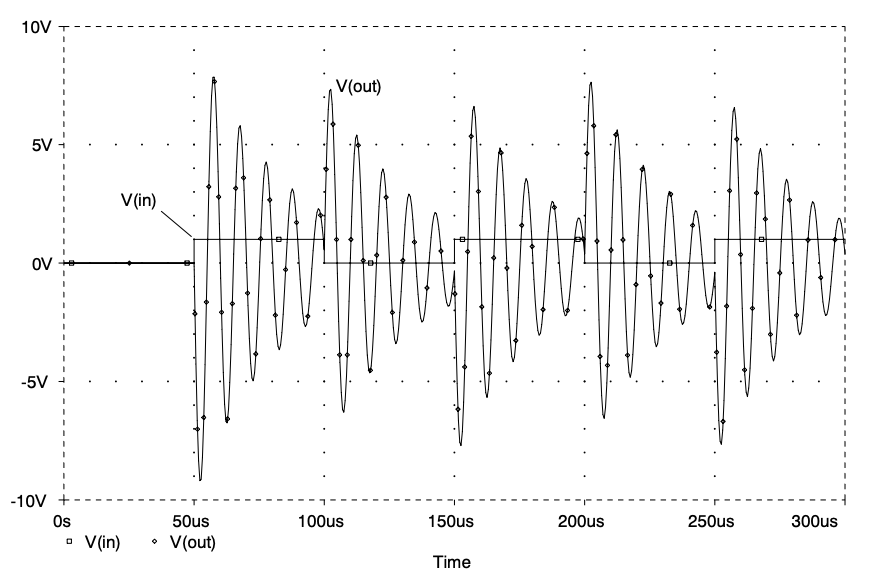
Figure Figure 9.7 shows the transient response of a circuit with a phase reserve of \(\alpha = 5.7°\). The overshoots are clearly visible and number of the overshoots per puls are larger then the customary “one over, one under”-rule. As the phase reserve is positive, the figure shows that even though the transient response is not ideal, the oscillations are attenuated and the circuit is can be considered as stable.
In practical application, the phase reserve can be graphically determined with the help of bode diagrams. The bode diagram of the circuit with an open feedback loop is simulated, so that the frequency \(f_k\) can be read out. This is the frequency where the feedback gain is 1 or 0 dB. The corresponding frequency to that, is the phase of the feedback gain \(\varphi_k\), the difference between \(-180°\) and \(\varphi_k\) is the phase reserve \(\alpha\). [14]
For the analysis of component stability the 5t-ota design from [15] was used. Figure 9.8 and Figure 9.9 show the schematics that simulated the stability analysis for the components. In both cases the AC source was inserted in the open feedback loop and the output of the OTA was used to analyse the stability.
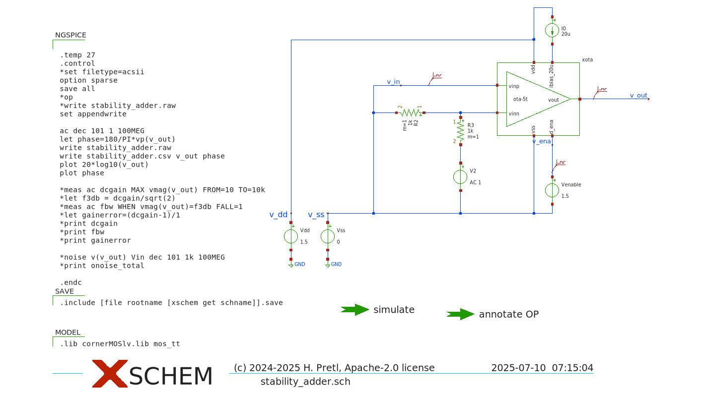
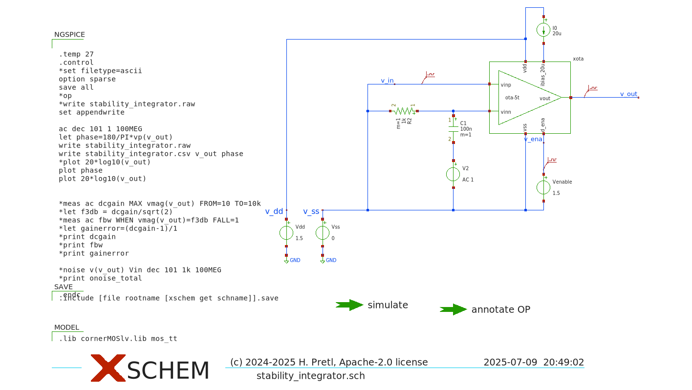
In the following figures Figure 9.10 and Figure 9.11 this stability analysis method was used to determine the stability over the phase reserve.
#| label: lst-stabilityAdder
#| code-fold: true
#| output: false
# Stability analysis adder
import numpy as np
import matplotlib.pyplot as plt
import sys
sys.path.insert(0, 'simulation')
import ltspy3
sd=ltspy3.SimData('simulation/stability_adder.raw',[b'v(v_out)',b'frequency'])
nvout = sd.variables.index(b'v(v_out)')
nfrequency = sd.variables.index(b'frequency')
fig, (ax1, ax2) = plt.subplots(2, 1, figsize=(10, 6), sharex=True)
ax1.semilogx(sd.values[nfrequency],20*np.log10(abs(sd.values[nvout])))
ax1.set_ylabel("Magnitude/dB")
ax1.axvline(3e5,color='red',linestyle='--')
ax1.grid(True, which="both", ls="--")
ax2.semilogx(sd.values[nfrequency],np.angle(sd.values[nvout], deg=True))
ax2.axvline(3e5,color='red',linestyle='--')
ax2.axhline(82.75,color='red',linestyle='--')
ax2.set_ylabel("Phase/deg")
ax2.set_xlabel("Frequency/Hz")
plt.grid(True, which="both", ls="--")
plt.tight_layout()
#plt.show()
plt.savefig("images/sec_characterisation/stabilityAdder.png", format="png", dpi=1000)
The frequency response of the adder shows a phase \(\varphi_k = 83°\), when the gain is 1. Calculation the phase reserve from that
\[\alpha_{add} = 180° - \varphi_k = 180° - 83° = 97° > 45° \]
gives a phase reserves, that indicates stability for this component.
#| label: lst-stabilityIntegrator
#| code-fold: true
#| output: false
# Stability analysis integrator
import numpy as np
import matplotlib.pyplot as plt
import sys
sys.path.insert(0, 'simulation')
import ltspy3
sd=ltspy3.SimData('simulation/stability_integrator.raw',[b'v(v_out)',b'frequency'])
nvout = sd.variables.index(b'v(v_out)')
nfrequency = sd.variables.index(b'frequency')
fig, (ax1, ax2) = plt.subplots(2, 1, figsize=(10, 6), sharex=True)
ax1.semilogx(sd.values[nfrequency],20*np.log10(abs(sd.values[nvout])))
ax1.set_ylabel("Magnitude/dB")
ax1.axvline(7e5,color='red',linestyle='--')
ax1.grid(True, which="both", ls="--")
ax2.semilogx(sd.values[nfrequency],np.angle(sd.values[nvout], deg=True))
ax2.axvline(7e5,color='red',linestyle='--')
ax2.axhline(68,color='red',linestyle='--')
ax2.set_ylabel("Phase/deg")
ax2.set_xlabel("Frequency/Hz")
plt.grid(True, which="both", ls="--")
plt.tight_layout()
#plt.show()
plt.savefig("images/sec_characterisation/stabilityIntegrator.png", format="png", dpi=1000)
The stability of the integrator circuit, as seen in Figure 9.11, shows a intersection of the magnitude plot with the \(0\,dB\) line at about \(f_k = 70\,kHz\), which corresponds to a phase of \(\varphi_k = 68°\). This would leave a phase reserve of:
\[ \alpha_{int} = 180° - \varphi_k = 112° > 45° \]
Therefore the integrator would be stable.
9.1.3 Ideal Opamp
To check the behauviour of the implemented circuit against the modelled behauviour of the transfer function, the universal biquad was built as an ideal circuit with voltage-regulated current sources instead of OTAs. This simulation of the circuit verfies that the circuit implementation of the biquadratic filter with OTAs can fulfill the requirements at least in the ideal case.
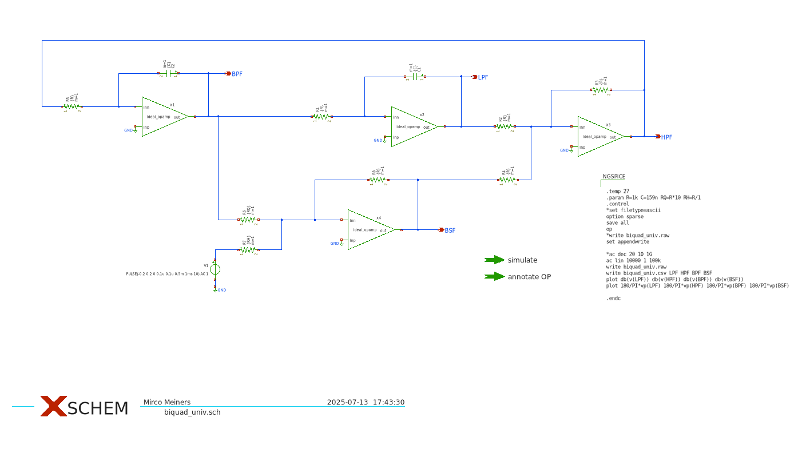
Figure 9.12 depicts the schematic of an universal biquad filter, where the OTAs are idealised with voltage controlled current sources. An ac simulation of this circuit can be viewed in Figure 9.13.
#| label: lst-idealCir
#| code-fold: true
#| output: false
# plot Ideal (voltage controlled current? source) biquad
import numpy as np
import matplotlib.pyplot as plt
import sys
sys.path.insert(0, 'simulation')
import ltspy3
sd=ltspy3.SimData('simulation/biquad_univ.raw')
nvoutLPF = sd.variables.index(b'v(lpf)')
nvoutHPF = sd.variables.index(b'v(hpf)')
nvoutBPF = sd.variables.index(b'v(bpf)')
nvoutBSF = sd.variables.index(b'v(bsf)')
nfrequency = sd.variables.index(b'frequency')
fig, (ax1, ax2) = plt.subplots(2, 1, figsize=(10, 6), sharex=True)
ax1.semilogx(sd.values[nfrequency],20*np.log10(abs(sd.values[nvoutLPF])),label='lpf')
ax1.semilogx(sd.values[nfrequency],20*np.log10(abs(sd.values[nvoutHPF])),label='hpf')
ax1.semilogx(sd.values[nfrequency],20*np.log10(abs(sd.values[nvoutBPF])),label='bpf')
ax1.semilogx(sd.values[nfrequency],20*np.log10(abs(sd.values[nvoutBSF])),label='bsf')
ax1.set_xlim([10e1,10e3])
ax1.set_ylim([-40,20])
ax1.set_ylabel("Magnitude/dB")
ax1.grid(True, which="both", ls="--")
ax1.legend()
ax2.semilogx(sd.values[nfrequency],np.angle(sd.values[nvoutLPF], deg=True),label='lpf')
ax2.semilogx(sd.values[nfrequency],np.angle(sd.values[nvoutHPF], deg=True),label='hpf')
ax2.semilogx(sd.values[nfrequency],np.angle(sd.values[nvoutBPF], deg=True),label='bpf')
ax2.semilogx(sd.values[nfrequency],np.angle(sd.values[nvoutBSF], deg=True),label='bsf')
ax2.set_ylabel("Phase/deg")
ax2.set_xlabel("Frequency/Hz")
ax2.legend()
plt.grid(True, which="both", ls="--")
plt.tight_layout()
#plt.show()
plt.savefig("images/sec_characterisation/idealCir.png", format="png", dpi=1000)
Figure 9.14 and Figure 9.15 compares the system-theoretic analysis with transfer functions with the simulated idealised of the filter design with each other. Both plots show very nicely that the amplitude response as well as the phase response of all four filters match with their simulated and calculated responses.
#| label: lst-compTfIdealAmplitude
#| code-fold: true
#| output: false
import numpy as np
import matplotlib.pyplot as plt
import sys
sys.path.insert(0, 'simulation')
import ltspy3
sd=ltspy3.SimData('simulation/biquad_univ.raw')
nvoutLPF = sd.variables.index(b'v(lpf)')
nvoutHPF = sd.variables.index(b'v(hpf)')
nvoutBPF = sd.variables.index(b'v(bpf)')
nvoutBSF = sd.variables.index(b'v(bsf)')
nfrequency = sd.variables.index(b'frequency')
#behauvioural moddling with tfs
# Initial values
f0 = 1000 # Resonance frequency in Hz
w0 = 2 * np.pi * f0 # Angular frequency in rad/s
Q = 10 # Quality factor
H0 = 1 # Play around with this later
# Logarithmic frequency axis
frequencies = np.logspace(0, 5, 10000) # Frequency from 10^2 to 10^4 Hz
s = 1j * 2 * np.pi * frequencies # Laplace-Variable s = jω
############################################
# Transfer functions of Active Filters
############################################
### Numerator
# Low Pass Filter
b_lp = H0
# High Pass Filter
b_hp = (H0 * (s**2 / w0**2))
# Band Pass Filter
b_bp = (-H0 * (s / w0))
# Band Stop Filter
b_bs = -(1 + (s**2 / (w0**2))) * H0
# Denominator -> for all filters the same
a0 = 1
a1 = (s / (w0 * Q))
a2 = (s**2 / (w0**2))
den = a0 + a1 + a2
############################################
# Calculation of the transfer functions H(s)
############################################
Hs_lp = b_lp / den
Hs_hp = b_hp / den
Hs_bp = b_bp / den
Hs_bs = b_bs / den
#mag plots
fig, axs = plt.subplots(2, 2, sharex=True, sharey=True)
ax1, ax2, ax3, ax4 = axs.flatten()
# Plotting each
ax1.semilogx(frequencies, 20 * np.log10(np.abs(Hs_lp)), label='tf')
ax1.semilogx(sd.values[nfrequency], 20 * np.log10(abs(sd.values[nvoutLPF])), label='ngspice')
ax1.set_ylabel("magnitude/dB")
ax1.set_title("low pass filter")
ax1.set_xlim([10,10e4])
ax1.set_ylim([-60,25])
ax1.grid(True, which="both", ls="--")
ax1.legend()
ax2.semilogx(frequencies, 20 * np.log10(np.abs(Hs_hp)), label='tf')
ax2.semilogx(sd.values[nfrequency], 20 * np.log10(abs(sd.values[nvoutHPF])), label='ngspice')
ax2.set_title("high pass filter")
#ax2.set_xlim([10,10e3])
#ax2.set_ylim([-40,25])
ax2.grid(True, which="both", ls="--")
ax2.legend()
ax3.semilogx(frequencies, 20 * np.log10(np.abs(Hs_bp)), label='tf')
ax3.semilogx(sd.values[nfrequency], 20 * np.log10(abs(sd.values[nvoutBPF])), label='ngspice')
ax3.set_xlabel("frequency/Hz")
ax3.set_ylabel("magnitude/dB")
ax3.set_title("band pass filter")
#ax3.set_xlim([10,10e3])
#ax3.set_ylim([-40,25])
ax3.grid(True, which="both", ls="--")
ax3.legend()
ax4.semilogx(frequencies, 20 * np.log10(np.abs(Hs_bs)), label='tf')
ax4.semilogx(sd.values[nfrequency], 20 * np.log10(abs(sd.values[nvoutBSF])), label='ngspice')
ax4.set_xlabel("frequency/Hz")
ax4.set_title("band stop filter")
#ax4.set_xlim([10,10e3])
#ax4.set_ylim([-40,25])
ax4.grid(True, which="both", ls="--")
ax4.legend()
plt.tight_layout()
#plt.show()
plt.savefig("images/sec_characterisation/compTfIdealAmplitude.png", format="png", dpi=1000)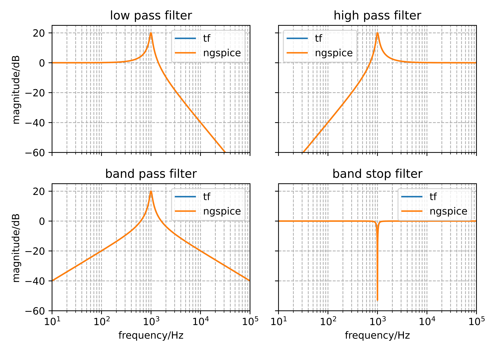
#| label: lst-compTfIdealPhase
#| code-fold: true
#| output: false
import numpy as np
import matplotlib.pyplot as plt
import sys
sys.path.insert(0, 'simulation')
import ltspy3
sd=ltspy3.SimData('simulation/biquad_univ.raw')
nvoutLPF = sd.variables.index(b'v(lpf)')
nvoutHPF = sd.variables.index(b'v(hpf)')
nvoutBPF = sd.variables.index(b'v(bpf)')
nvoutBSF = sd.variables.index(b'v(bsf)')
nfrequency = sd.variables.index(b'frequency')
#behauvioural moddling with tfs
# Initial values
f0 = 1000 # Resonance frequency in Hz
w0 = 2 * np.pi * f0 # Angular frequency in rad/s
Q = 10 # Quality factor
H0 = 1 # Play around with this later
# Logarithmic frequency axis
frequencies = np.logspace(0, 4, 10000) # Frequency from 10^2 to 10^4 Hz
s = 1j * 2 * np.pi * frequencies # Laplace-Variable s = jω
############################################
# Transfer functions of Active Filters
############################################
### Numerator
# Low Pass Filter
b_lp = H0
# High Pass Filter
b_hp = (H0 * (s**2 / w0**2))
# Band Pass Filter
b_bp = (-H0 * (s / w0))
# Band Stop Filter
b_bs = -(1 + (s**2 / (w0**2))) * H0
# Denominator -> for all filters the same
a0 = 1
a1 = (s / (w0 * Q))
a2 = (s**2 / (w0**2))
den = a0 + a1 + a2
############################################
# Calculation of the transfer functions H(s)
############################################
Hs_lp = b_lp / den
Hs_hp = b_hp / den
Hs_bp = b_bp / den
Hs_bs = b_bs / den
#phase plots
fig, axs = plt.subplots(2, 2, sharex=True, sharey=True)
ax1, ax2, ax3, ax4 = axs.flatten()
# Plotting each
ax1.semilogx(frequencies, np.angle(Hs_lp, deg=True), label='tf')
ax1.semilogx(sd.values[nfrequency],np.angle(sd.values[nvoutLPF], deg=True),label='ngspice')
ax1.set_ylabel("phase/deg")
ax1.set_title("low pass filter")
ax1.set_xlim([10,10e3])
#ax1.set_ylim([-40,25])
ax1.grid(True, which="both", ls="--")
ax1.legend()
ax2.semilogx(frequencies, np.angle(Hs_hp, deg=True), label='tf')
ax2.semilogx(sd.values[nfrequency],np.angle(sd.values[nvoutHPF], deg=True),label='ngspice')
ax2.set_title("high pass filter")
#ax1.set_xlim([10,10e3])
#ax1.set_ylim([-40,25])
ax2.grid(True, which="both", ls="--")
ax2.legend()
ax3.semilogx(frequencies, np.angle(Hs_bp, deg=True), label='tf')
ax3.semilogx(sd.values[nfrequency],np.angle(sd.values[nvoutBPF], deg=True),label='ngspice')
ax3.set_xlabel("frequency/Hz")
ax3.set_ylabel("phase/deg")
ax3.set_title("band pass filter")
#ax1.set_xlim([10,10e3])
#ax1.set_ylim([-40,25])
ax3.grid(True, which="both", ls="--")
ax3.legend()
ax4.semilogx(frequencies, np.angle(Hs_bs, deg=True), label='tf')
ax4.semilogx(sd.values[nfrequency],np.angle(sd.values[nvoutBSF], deg=True),label='ngspice')
ax4.set_xlabel("frequency/Hz")
ax4.set_title("band stop filter")
#ax1.set_xlim([10,10e3])
#ax1.set_ylim([-40,25])
ax4.grid(True, which="both", ls="--")
ax4.legend()
plt.tight_layout()
#plt.show()
plt.savefig("images/sec_characterisation/compTfIdealPhase.png", format="png", dpi=1000)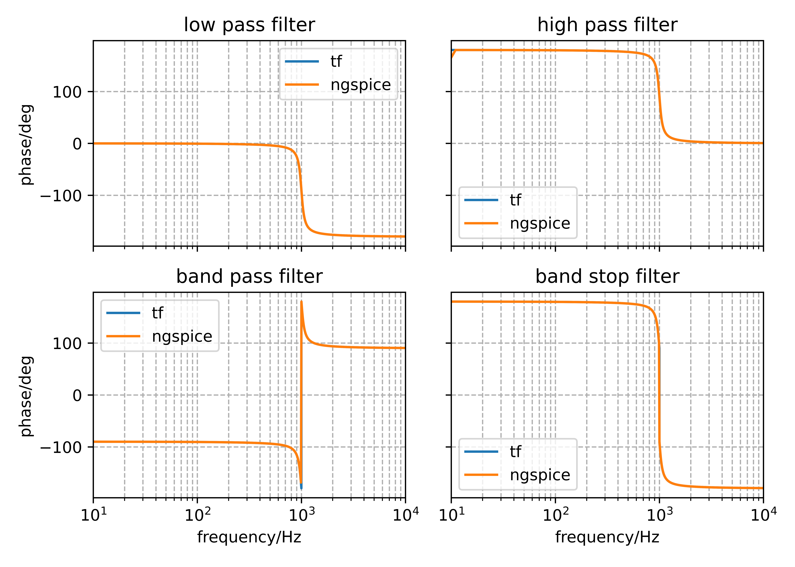
10 Xschem Simulation
10.1 Environment Setup
Proper configuration of the simulation environment is crucial for accurate and reliable simulation results using Xschem within a Docker container. This section details the necessary considerations regarding path handling and Docker environment variables for a robust simulation process.
10.1.1 Absolute vs. Relative Path Handling
In integrated circuit simulations, particularly involving hierarchical netlisting used by Xschem, careful management of file paths is essential. Absolute paths were chosen to ensure consistency and reliability, as hierarchical structures in netlisting frequently generate new subdirectories during simulation processes. Using absolute paths prevents issues arising from relative paths becoming invalid when directory structures change. Relative paths, although theoretically functional, add complexity and increase the likelihood of path errors during simulations.
Therefore, all simulation paths have been consistently defined using absolute references, guaranteeing stable and predictable netlisting and simulation behavior throughout the project.
10.1.2 Docker Environment Variables Configuration
Within the Docker container environment used for simulations, specific variables require explicit and careful configuration. Key points regarding Docker environment setup include:
DESIGNS Variable: The core Docker environment variable,
$DESIGNS, is configured to reference the directoryroot/FOSS/designs. Local project paths and symbols are added explicitly to this variable to ensure accurate referencing and inclusion during netlisting.Docker Root Directory: The root directory within the Docker environment differs from that of the host operating system, specifically being located at
root/headless. This distinction requires careful handling when navigating or setting paths within Docker terminals.Terminal and Directory Awareness: Users, especially those working on Windows-based systems, need to distinguish clearly between terminal environments (native Windows, Windows Subsystem for Linux, Docker) as each has fundamentally different root directories and file path conventions. Maintaining clear awareness of these distinctions prevents file referencing errors during simulations.
These explicit configurations and considerations ensure that the Xschem simulation environment operates smoothly, predictably, and accurately throughout the project’s lifecycle.
10.2 Symbol and Netlist Preparation
Accurate preparation of symbols and netlists is fundamental for reliable integrated circuit simulations using Xschem. This section outlines the critical aspects regarding symbol definitions, classifications, netlist generation, and debugging practices to ensure proper functionality and error-free simulations.
10.2.1 Symbol Definitions and Classification (Analog Pins)
All symbols used within this simulation framework must be explicitly classified as analog components. Digital pins or incorrectly labeled pins lead to simulation failures because they are incompatible with the analog circuit simulation environment. Furthermore, each symbol must be explicitly marked as a sub-circuit rather than a primitive component. Mislabeling symbols as primitives can cause errors during hierarchical netlist processing, as the netlister expects defined sub-circuit symbols to correctly navigate the circuit hierarchy.
In this project, all symbols were thoroughly reviewed to confirm they were analog and properly labeled as sub-circuits.
10.2.2 Netlist Generation and Validation
Netlist generation in Xschem follows a hierarchical methodology. Starting from the top schematic, the netlister recursively searches for defined symbols globally. It is essential that symbol paths and local variables are correctly configured and matched explicitly in each hierarchy level. If paths or symbols are misconfigured or missing, the netlister fails to locate necessary components, leading to simulation errors.
Therefore, explicit steps were taken to ensure:
Proper global variable definitions for symbol paths.
Accurate symbol descriptions that match netlist entries.
Verification of netlists after every significant schematic modification.
Effective debugging practices strongly emphasize using plain-text editors to inspect and modify symbol (.sym) and schematic (.scm) files. The files (.spice) making direct text inspection both possible and advisable.
Adopting this debugging approach significantly enhanced the efficiency and accuracy of symbol and netlist preparation processes throughout the simulation.
10.3 OTA Circuit Integration Self-built Five-Transistor OTA
Initially, our group developed our own five-transistor OTA schematic within Xschem to gain practical insights and explore various design parameters.
Figure 10.1 shows the minimalist OTA designed during the early project phase. The circuit follows the five-transistor topology: an NMOS differential pair (M8/M3) converts the input difference into two anti-phase drain currents; a PMOS current mirror (M1/M7) then forces these currents to recombine at the single-ended node v_out, generating voltage gain of roughly \[ g_{m,\text{pair}}\bigl(r_{o,\text{M1}} \parallel r_{o,\text{M7}}\bigr) \] Biasing is supplied by the tail branch (M4→M2), where the external i_bias current is mirrored into M2.
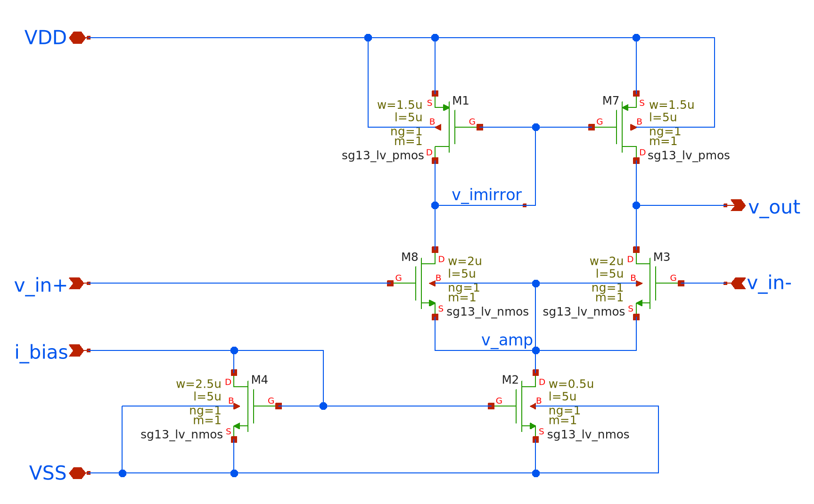
10.3.1 Validation of Self-built OTA – unity-gain buffer
To verify large-signal behaviour the prototype OTA was configured as a unity-gain follower (Figure 10.2): v_out is shorted to the inverting input, and the non-inverting input is driven by a single rail-to-rail pulse PULSE(0 1.2 10m 1u 1u 20m 2) The stimulus holds 0 V for 10 ms, rises to 1.2 V in 1 µs, remains high for 20 ms, and then returns to 0 V. The long two-second period guarantees only one transition inside the 100 ms simulation window. A 20 µA current source on i_bias establishes the tail current, with supplies at VDD = 1.5 V and VSS = 0 V.
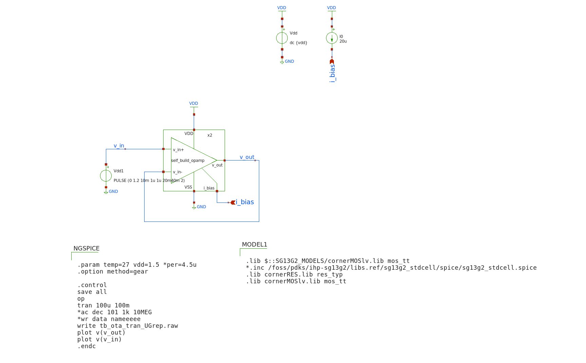
The essential NGSpice control block is
.control
save all
tran 100u 100m
*set filetype=ascii
set wr_singlescale
*wrdata tb_ota_tran_UGbuffer.txt v(v_out) v(v_in)
.endc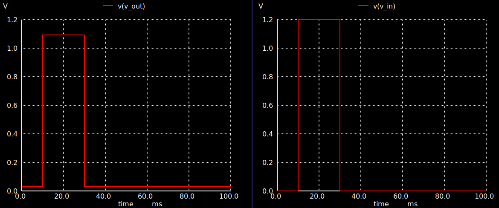
Figure 10.3 plots the resulting traces. The output (left) mirrors the input (right). The output does respond to the input change, it rises up during the pulse window, indicating the OTA is doing something. V_out lags significantly behind v_in and only reaches 1.1 V, while v_in reaches 1.2 V. The OTA as unity-gain buffer should closely track the input with only minimal offset or delay.
This indicates: - Too low gain - Insufficient bandwidth - Or incorrect biasing (e.g., not enough current to drive the output stage).
After conducting simulations and analyses, and discussing the results with the professor, the conclusion was that the five-transistor OTA provided by Prof. Pretel offered superior performance and reliability for our application. Thus, the decision was made to proceed with Prof. Pretl’s well-established OTA design.
10.4 Xschem OTA Description (Five-Transistor OTA by Prof. Pretl)
Prof. Pretl’s five-transistor OTA is an optimized implementation, specifically tailored for efficient analog circuit integration using the SG13G2 CMOS process. His design, depicted in Figure 10.4, maintains simplicity while enhancing performance through thoughtful sizing and layout practices. This OTA employs a standard architecture comprising an NMOS differential input pair, a tail current source transistor, and a PMOS current mirror load. The input differential voltage is transformed by the differential pair into two opposite-phase currents, recombined by the PMOS mirror at the single-ended output node.
A dedicated transistor sets a stable bias current, ensuring predictable and robust OTA performance over varying operating conditions. Channel lengths and widths are carefully chosen to balance between adequate intrinsic gain, bandwidth, and noise characteristics. Particularly, the transistor sizes follow good IC design practices, with lengths exceeding the minimum dimensions to suppress short-channel effects and flicker noise. Bulk connections are properly handled to avoid body effects, typically by tying bulks directly to their corresponding source terminals. The accompanying layout from Prof. Pretl ( Figure 10.4) illustrates thoughtful device placement and symmetry, reducing mismatches and parasitic coupling. Furthermore, multiple finger transistors are employed effectively to optimize layout density and performance, adhering to industry-standard guidelines.
Simulations and measured data presented by Prof. Pretl validate this design as a stable, efficient, and high-performance option for analog signal processing. It exhibits superior gain and bandwidth compared to simpler OTA configurations, making it suitable for more demanding applications in integrated analog and mixed-signal circuits. Due to these advantages, our group adopted this OTA as the baseline for subsequent design and integration phases in our project.
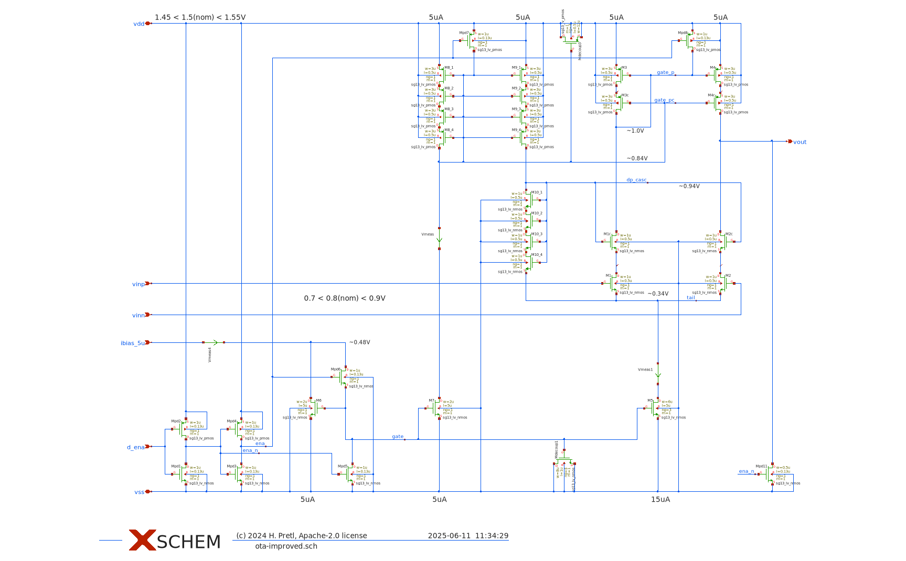
10.5 Sizing and Simulation
Proper transistor sizing is critical when designing an OTA for use in a biquad filter, where gain, linearity, and bandwidth all depend heavily on MOSFET dimensions. To guide the sizing process, The \(g_m / I_D\) methodology is adopted.
After experimenting with various combinations of transistor widths and lengths in simulation, we found that many trade-offs emerged between gain, speed, and voltage headroom—particularly for the cascode devices. Following Prof. Pretl’s recommendations, assigning a reduced channel length of \(L = 0.5u\) to the input differential pair and cascode devices (\(M_{1/1C}\), \(M_{2/2C}\), \(M_{3/3C}\), \(M_{4/4C}\)) to maximize speed and transconductance. Meanwhile, the tail current source transistors (\(M_5\), \(M_6\)) were given a longer channel length of \(L = 5u\) to improve matching, suppress flicker noise, and ensure robust common-mode rejection.
A constant sizing point of \(g_m / I_D = 13\) was applied across all devices, which offered a good balance between transconductance efficiency and voltage headroom. This choice ensured that even with stacked transistors, all devices remained in saturation across the intended signal swing and supply range.
Simulation results based on this sizing show that the OTA achieves an open-loop gain \(A_0 > 43\,dB\), satisfying key performance goals such as bandwidth and linear range for biquad operation. These results confirm that the selected sizing strategy works reliably within the supply voltage limits of the SG13G2 process, and is well-suited for analog signal processing tasks requiring accurate and programmable transconductance.
10.5.1 Small-Signal Frequency Response
To evaluate the frequency-domain behavior of the improved OTA, an AC simulation was performed using a differential testbench. The resulting magnitude response, shown in Figure 10.5, displays the classic characteristics of a low-pass amplifier.
The curve remains flat (0 dB) throughout the low-frequency range, indicating that the OTA maintains constant gain for small-signal inputs up to approximately \(f_{-3\text{dB}} \approx 80\,\text{MHz}\). This –3 dB point marks the unity-gain bandwidth of the amplifier in this configuration. Beyond this corner frequency, the magnitude begins to drop at a rate close to –20 dB/decade, indicating a dominant single-pole roll-off.
The high-frequency attenuation begins smoothly, confirming that the amplifier is well-compensated and free from peaking or signs of instability.
Overall, the OTA demonstrates a strong small-signal frequency response, offering sufficient gain-bandwidth product for its intended use in biquad filters and other analog signal processing tasks.
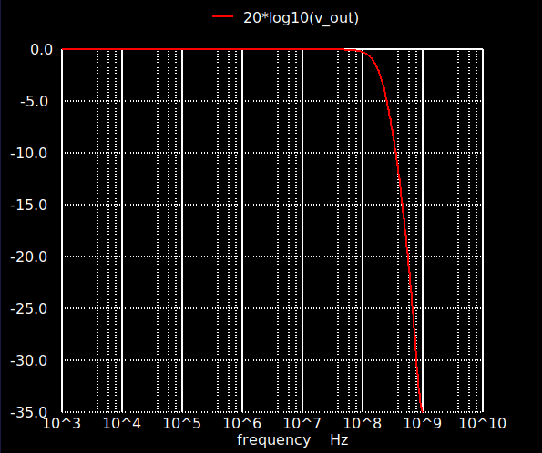
10.5.2 Large-Signal Transient Response
Figure 10.6 shows the transient simulation result of the improved OTA in response to a step input signal.
The red trace (\(v_\text{ena}\)) represents the input voltage. It exhibits a sharp transition from 0 V to approximately 1.5 V at the beginning of the simulation and remains constant for the rest of the time window.
The blue trace (\(v_\text{out}\)) shows the corresponding OTA output voltage. Immediately after the input step, the output rises to approximately 0.8 V and holds steady throughout the entire duration of the simulation (15 µs). There is no visible overshoot, ringing, or delay in the output transition, and the response appears stable and monotonic.
This result confirms that the OTA produces a constant output voltage in response to a step input under the simulated conditions. The flat and settled output also suggests that the biasing and feedback configuration were correctly established.
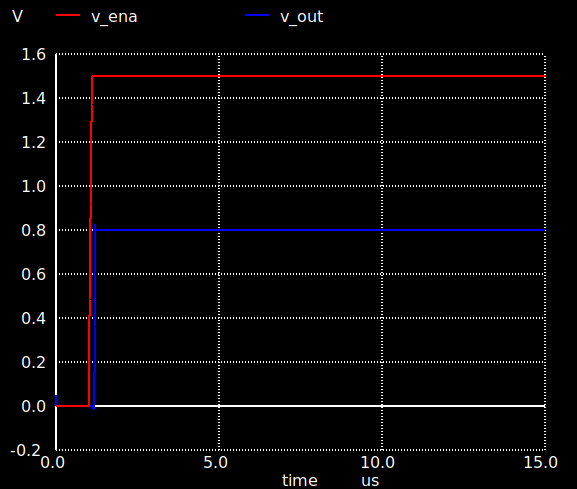
10.6 gm‑C Biquad Prototype – Concept and Implementation
After initially developing our own basic five-transistor OTA to explore the design flow and simulation process in Xschem, the next step was, to study and simulate several OTA topologies provided by Prof. Pretl. This included hands-on experimentation with his differential architectures and cascode-enhanced designs, allowing us to deepen our understanding of performance trade-offs and layout considerations in analog IC design.
In this final design step, the goal was to building our own OTA, this time using an improved architecture specifically tailored for integration into a gm‑C biquad filter. The goal was to implement a fully differential, tunable low-pass filter using transconductors and capacitors only. By controlling the OTA bias current, we aimed to achieve continuous tuning of the filter’s cut-off frequency without modifying passive components.
The following section presents the concept, schematic implementation, and simulation-based validation of this gm‑C biquad prototype. It marks the transition from isolated OTA design toward the realization of a complete analog signal processing block.
10.6.1 OTA Implementation for gm‑C Biquad
The OTA used in our gm‑C biquad implementation is structurally inspired by the differential architecture shown in Figure 3.15(c) of [16] analog design textbook. As illustrated in Figure 10.7, the OTA consists of a fully differential input stage, a folded current-mirror load, and a programmable tail current source, making it well-suited for use as a transconductor in gm‑C filters.
The core of the OTA includes a differential NMOS input pair (\(M_7\), \(M_8\)), which converts the input voltage difference \((v_\text{inp} - v_\text{inn})\) into a differential current. These currents are then mirrored and steered by the PMOS current mirror loads (\(M_2\) through \(M_6\)) into the output branches (\(v_\text{outp}\) and \(v_\text{outn}\)). The top mirrors are folded downward into the output stage, creating high output impedance and helping increase gain—similar to the folded-cascode concept seen in the reference OTA.
The output common-mode voltage is stabilized using a biasing network composed of transistors \(M_1\) and \(M_{11}\)–\(M_{12}\), which fix the gate voltages for proper operation. The tail current is generated through the NMOS branch (\(M_9\), \(M_{10}\)), which is set by the external \(i_\text{bias}\) node and determines the OTA’s transconductance via:
\[ g_m \approx \frac{2 I_\text{bias}}{V_\text{ov}} \]
The structure is deliberately symmetric to preserve linearity and minimize even-order distortion, and the design reflects the need for balanced performance across process corners in gm‑C filter applications. Unlike the simplified example in [16], which omits layout- and bias-stabilizing elements for clarity, our implementation explicitly includes bias regulation to improve practical robustness and simulation convergence.
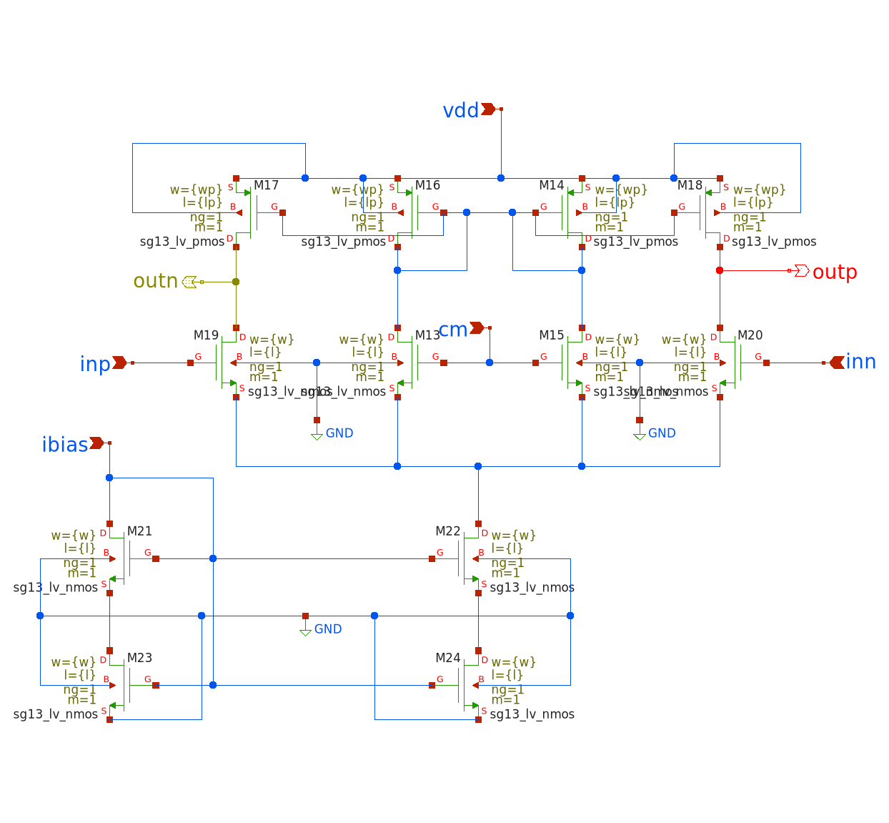
10.6.2 gm‑C Biquad Schematic in Xschem
Figure 10.8 shows the complete schematic of the gm‑C biquad filter implemented in Xschem. The design consists of four OTA instances, each configured in a differential topology and biased with a shared tail current of 100 µA via the global ibias net. The power supply is set to 1.5 V, and all OTAs operate with a common-mode input reference of 0.75 V via the vcm node.
The circuit follows the classical gm‑C biquad topology introduced earlier. It features two cascaded integrator stages formed by OTA–capacitor pairs, followed by additional OTA blocks for feedforward and feedback terms. All OTAs use the same internal schematic (ota_gm_100u) and are referenced symmetrically.
Each OTA drives or is loaded by 10 pF metal-insulator-metal (MIM) capacitors (\(C_1\)–\(C_6\)), arranged in 1:2 ratios where necessary to match the theoretical filter structure (e.g., \(C_1\) and \(C_2\)). Differential symmetry is preserved throughout the network using mirrored signal paths and balanced layout routing.
The input signals vinp and vinn are provided by AC voltage sources with 0.5 V DC offset and 0.5 V amplitude. The output is taken differentially as voutp and voutn, and the simulation computes their difference using:
let vod = v(outp) - v(outn)
plot db(v(vod))This differential output is evaluated across a frequency sweep from 1 kHz to 100 MHz using the NGSpice .ac dec command with 100 points per decade:
ac dec 100 1k 100MEGThe NGSpice block at the top of the schematic (see Figure 10.8) includes the device model definitions, the simulation temperature (set to 27°C), and references to the SG13G2 PDK libraries. Parameterized values for transistor dimensions are declared at the beginning to allow flexibility when tuning device behavior:
.param lp="X"u wp="X"u l="X"u w="X"u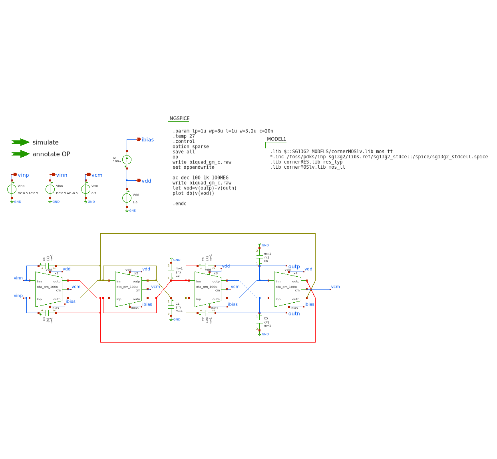
This modular approach to simulation setup enhances reproducibility and simplifies design iterations. The OTA instances are invoked via their corresponding symbol files, ensuring consistency between simulation and schematic representation.
Overall, this gm‑C biquad schematic represents a practical and scalable implementation of a continuous-time filter using custom OTA blocks. The approach aligns well with standard analog IC design methodology and is suitable for integration in high-speed signal processing chains.
10.6.3 Sizing the 1 kHz Low-Pass gm-C Biquad to the Baker Topology
Figure 10.8 reproduces the fully differential gm-C biquad proposed by [16]. In this architecture, the behavior of the filter is governed by six small-signal parameters:
\[ \begin{aligned} G_1 &= \frac{g_{m1}}{C_1 + C_2}, & G_2 &= \frac{g_{m2}}{g_{m1}}, & G_3 &= \frac{C_1}{g_{m1}}, \\ G_4 &= \frac{g_{m3}}{C_3 + C_4}, & G_5 &= \frac{g_{m4}}{g_{m1}}, & G_6 &= \frac{C_3}{g_{m3}}. \end{aligned} \]
These expressions relate the two integrator stages \(\bigl(g_{m1}, C_{1,2}\bigr)\) and \(\bigl(g_{m3}, C_{3,4}\bigr)\) to the feed-forward transconductors \(g_{m2}\) and \(g_{m4}\). For a low-pass realisation, we adopt the convenient symmetry:
\[ g_{m1} = g_{m3} = g_m, \quad C_1 = C_2 = C_3 = C_4 = C, \]
so that both integrator poles coincide. Under this symmetry, the pole frequency reduces to
\[ f_0 = \frac{g_m}{4\pi C}, \]
where the factor of 4 arises from the doubled \(2C\) plates used at each integrator output in the schematic.
To meet the low-frequency target of 1 kHz, we must carefully select appropriate values for \(g_m\) and \(C\), while respecting the OTA bias constraint. Each OTA operates with a fixed tail current of \(I_{\text{tail}} = 100\;\mu\text{A}\), resulting in \(I_D = 50\;\mu\text{A}\) per branch. To ensure good noise performance and strong inversion operation, we target a transconductance efficiency of approximately
\[ \left( \frac{g_m}{I_D} \right)_{\text{target}} \approx 5\;\text{V}^{-1}. \]
This yields a branch transconductance of
\[ g_m = \left(\frac{g_m}{I_D}\right) I_D = 5 \cdot 50\;\mu\text{A} = 0.25\;\text{mS}. \]
Substituting this into the expression for \(f_0\), we determine the required capacitor value for a 1 kHz pole:
\[ C = \frac{g_m}{4\pi f_0} = \frac{0.25\;\text{mS}}{4\pi \cdot 1\;\text{kHz}} \approx 20\;\text{nF}. \]
As each integrator output is loaded with \(2C\), the effective capacitance at each output node is approximately 40 nF.
Area note: At a typical SG13G2 MIM density of \(2\,\text{fF}/\mu\text{m}^2\), a 20 nF capacitor requires roughly 10 mm² of silicon area. This is large for an on-chip design and motivates the use of stacked MIM structures or off-chip MLCCs for prototyping.
To realise this \(g_m\) in a compact layout, we choose a MOSFET overdrive voltage of \(V_{\text{OV}} = 0.40\,V\) and assume a mobility-capacitance product of \(\mu_n C_{\text{ox}} \approx 200\,\mu\text{A}/\text{V}^2\). The required transistor aspect ratio then becomes:
\[ \frac{W}{L} = \frac{2I_D}{\mu_n C_{\text{ox}} V_{\text{OV}}^2} = \frac{100\;\mu\text{A}}{200\;\mu\text{A}/\text{V}^2 \cdot 0.16} \approx 3.1. \]
The final device sizing is summarised below:
| Device set | \(L\) | \(W\) | Comment |
|---|---|---|---|
| NMOS (all) | 1 µm | 3.2 µm | \(W/L \approx 3\), yielding \(g_m \approx 0.25\) mS |
| PMOS (all) | 1 µm | 8 µm | Width ×2.5 for hole mobility compensation |
| Tail pair | 5 µm | 3.2 µm | Long \(L\) increases \(r_o\) and suppresses \(1/f\) noise |
In summary, this sizing strategy realises a 1 kHz low-pass response while respecting the 100 µA tail bias in theory. The chosen transistor dimensions enable consistent \(g_m\) across all OTA branches. Although the large on-chip capacitors pose layout challenges, they can be addressed using multilayer MIM stacks or external capacitors during prototyping. The unified NMOS/PMOS geometries also facilitate efficient common-centroid layout across the four OTAs that form the biquad filter.
10.7 GM/ID Methodology
One of the first questions to ask in IC design is how small or how large are the MOSFETs used in the circuits. MOSFETs can be used in saturation mode or in the triode state (as well as in cut-off but this is not relevant for us). When the FET is in saturation the drain current \(I_{D}\) is controlled primarily by the gate-source voltage \(V_{GS}\). In this case the drain-source voltage has a smaller impact on the drain current. For the Transistor to work in saturation the drain-source terminals need to be driven with a voltage high enough so this “saturates” the FET and the highest drain-current is achieved.
On the other hand if the voltage applied across the drain-source contacts (on a NMOS for example) is relatively low (compared to the voltage for saturation), the FET will operate in the so called triode mode. In triode mode the drain-source voltage \(V_{DS}\) has a fundamentally larger impact on the drain current then in the saturation mode. [7]
The Methodology to solve the question, asked at the beginning of this chapter is the \(\frac{gm}{I_{D}}\) methodology which will introduce in a moment. There are basically three MOSFET characteristics directly describing the behaviour of it:
- \(\frac{g_m}{I_D}\) : Transconductance Efficiency
- \(\frac{\omega_{T}}{f_T}\) : Transit frequency
- \(\frac{g_m}{g_{ds}}\) : Intrinsic Gain
To understand the first characteristic for FETs, take a look at the different operating points which depend on the applied voltages. Whenever applying voltages to a FET in order to control a specific drain current \(I_{D}\), the operattion in the FET in either weak inversion, strong inversion or moderate inversion. This behaviour is controlled by the Overdrive Voltage \(V_{OV}\) which is defined as the difference between the gate-source voltage and the threshold voltage. To note this small point the drain-current is controlled by the voltage between gate and source. Whenever an nmos is not being used as a low-side switch or amplifier or the pmos is being used as a low-side component problems can arise.
\[ V_{OV} = V_{GS} - V_{TH} \]
Important to keep in mind that the threshold voltage isn’t a magical number that can be applied to every MOSFET, it rather depends on the geometry (with W and L for example) and other factors. For the example nmos given in the Analog Circuit Design IHP SG13G2 Devices Table by Professor Pretl, the threshold voltage is 0.5V. Therefore the overdrive voltage describes how “much” the gate-source voltage is above the threshold of the FET. Depending on this overdrive voltage the circuit/ic designer can apply different \(\frac{g_{M}}{I_{D}}\) values with the unit [\(\frac{1}{V}\)]. This unit is derived in the following way:
With \(g_{M}\) defined by:
\[ g_{M} = \frac{\partial I_D}{\partial V_{GS}} \]
and \(I_{D}\) having the unit Ampere [A] and the voltage \(V_{GS}\):
\[ \frac{\frac{A}{V}}{A} = \frac{1}{V} \]
Before continueing with the \(\frac{g_{M}}{I_{D}}\) methode, note that there also is the square-law model with which circuit designers can design MOSFET circuits. This model is usually applicable for PCB circuits and takes the situation into account where the MOSFET is driven in the stong inversion state. The square-law model is being applied assuming that the FET is operating in the “linear” or “triode” mode, however on nanometer scale FETs (down to 130 nm with the IHP-SG13G2 PDK) this model doesn’t give us precise solutions anymore. Many effects like parasitic capacitances alter the operational behaviour of the FET and lead to the square-law model deviating afar from the real-world behaviour in many situations [17].
The square-model drain-current behavior is being described by the following formula:
\[ I_{D} = \frac{Z \cdot \overline{\mu_n} \cdot C_{OX}}{L} [(V_{GS} - V_{T}) \cdot V_{DS} - \frac{V_{DS}^2}{2}] \]
with the two conditions:
\(0 \leq V_{DS} \leq V_{D_{SAT}}\) and \(V_{GS} \geq V_T\)
with following definitions:
- \(C_{OX} = \frac{\epsilon_{ox}}{x_{ox}}\)
- Z = MOSFET width
- L = MOSFET Channel length
- \(V_T\) = Threshold voltage
- \(\overline{\mu_n}\) = effective electron mobility
The threshold voltage is defined as:
\[ V_T = 2 \phi_F + \frac{\epsilon_s}{C_{OX}} \sqrt{\frac{2q N_{A}}{\epsilon} (2\phi_F)} \]
with:
\(\phi_F\) being the Fermi Potential (surface potential) defined by:
\[ \phi_F = \frac{kT}{q} \cdot ln (\frac{N_A}{n_i}) \]
with \(N_A\) being the acceptor doping concentration and \(n_i\) being the intrinsic carrier concentration. The term 2 \(\phi_F\) corresponds to the surface potential required to achieve strong inversion.
For more details the reader can consult [17],[18] or [19].
To illustrate the problems of the square-law model when designing MOSFET circuits at nanometer scale will look at somwe e graphs visualizing it’s limitation. First of all let’s look at the formulas for the square-law when we want to achieve more performance with our FETs:
Transconductance Efficiency:
\[ \frac{g_m}{I_D} \cong \frac{2}{V_{OV}} \]
higher efficiencs here means more transconductance for the same drain current.
Transit Frequency:
\[ \frac{g_M}{C_{gg}} \cong \frac{3}{2}\frac{\mu V_{OV}}{L^2} \]
higher transit frequency for the same gate-capacitance.
Intrinsic Gain:
\[ \frac{g_m}{g_{ds}} \cong \frac{2}{\lambda V_{OV}} \]
high transconductance (at same drain-current \(I_D\)) without higher output conductance.
The square-law model completely fails in these cases when the MOSFET is not operation in strong inversion. In moderate and weak inversion we are forced to use a different mathmatical model , and the \(\frac{g_M}{I_D}\) method is a really good starting point [20].
The following figures will show the deviation between square-law and measurements as well as the \(\frac{g_M}{I_D}\) methodology:
So first of all when we use \(g_M\) and \(I_D\) we specify that for a specific drain-current we get a specific transconductance, for example with a \(\frac{g_M}{I_D}\) of 10 S/A we get 10 \(\mu\) S per 1 \(\mu\) A of bias current. And depending on how “much” the transistor is operating above it’s threshold voltage \(V_{th}\) (basically the Overdrive Voltage \(V_{OV}\) ) you get different inversion levels. From weak inveresions for low overdrive voltages to moderate inversion when operating at approximately \(V_{OV}\) = \(V_{th}\) to high inversion when \(V_{OV}\) > \(V_{th}\).
With the square-law value for transconductance efficiency we completely deviate with that approximation in weak and moderate inversion:
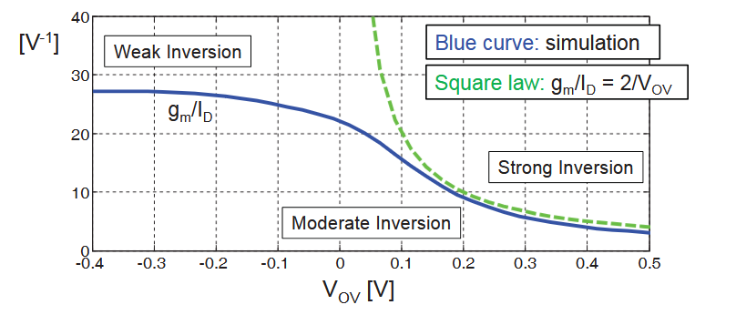
Another deviation from square-law to real MOSFET behaviour can be seen when we increase the gate-source voltage of the FET and measure the drain-current. According to square-law formual for the drain-current the current should just increase to the square with increasing gate-source voltage. But by taking the square of the drain-current and increasing \(V_{GS}\) we can see that the drain-current does not magically start flowing above the threshold-voltage and also the behaviour is also not linear (quadratically when not taking the square of the current):
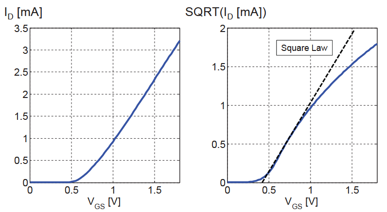
This simulation is done for a n-channel MOSFET with a drain-source voltage of 1.8 V and a size of L = 180 nm and W = 5 \(\mu\)m.
The drain-current behaviour at sub-threshold gate voltages is completely inaccurate for the square-law too, and the following graph visualizes the limitation of the square-law at this point again:
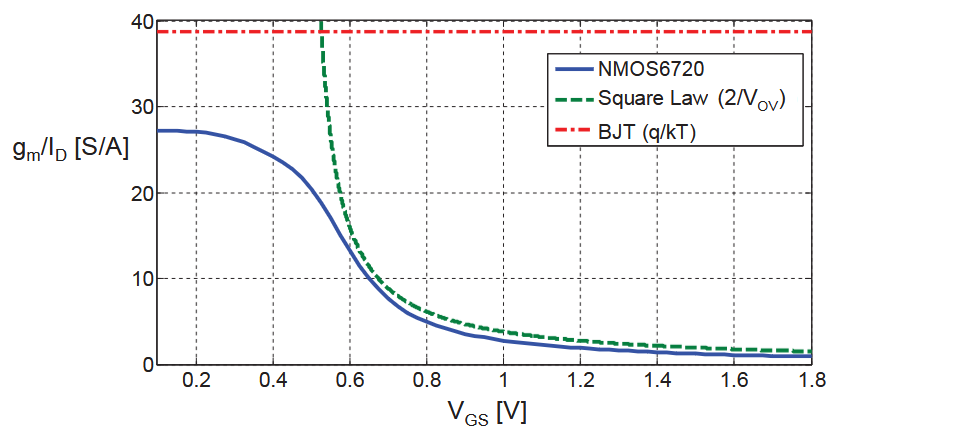
These three examples show that the approach using square-law to size MOSFETs is not sufficient when the transistor is operating in weak or moderate inversion and when driving the FET (nmos for example) with a low gate-source (or overdrive-) voltage. To cite Mr. Walker on this topic:
“This means that the square law equation (which assumes 100% drift current) does not work unless the gate overdrive is several \(\frac{kT}{q}\), [20]”.
To conclude this, we can keep in mind that there is no simple formula that can describe the drain-current behaviour in all situations and be universally used. So using the \(\frac{g_m}{I_D}\) methodology is the way to go in our project.
Now with that out of the way we can design our circuits using the \(\frac{g_m}{I_D}\) methodology. The main properties of our MOSFETs we can manipulate in xschem are the lenght of the channel L, the width W and the bias current \(I_D\). The common way to use this method is to first characterize nmos and pmos field effect transistors and then use this data to design the circuits. In the chapter “MOSFET characterization Testbench” chapter in [7] we can see how the values for the \(\frac{g_m}{I_D}\) methodology are being simulated for later use.
The lenght of the MOSFET channel also has a large influence on it’s frequency characteristic as it can be seen in this simulation:
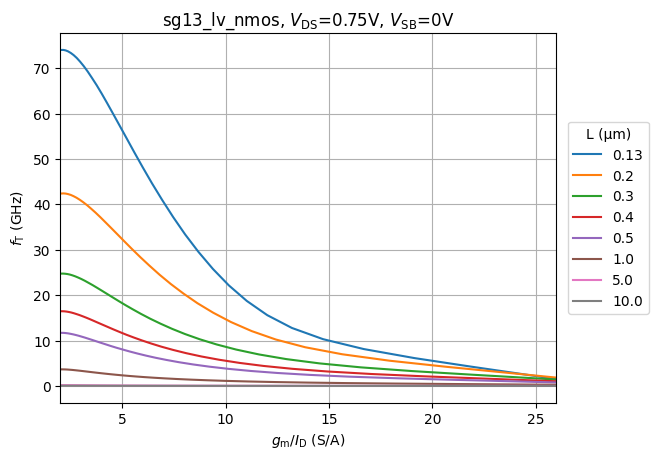
The operating areas of interest for us are the saturation region (when using the FET as an amplifier for example) and the region when the FET is being used to “just” work as a switch. With setting \(V_{DS}\) to \(\frac{V_{DD}}{2}\) we keep the FET in saturation. Reminding ourselves again that with larger \(g_M\) we have more “gain” and with a smaller \(I_D\) we have higher efficiency we try to hit the sweetspot between size (as every square milimeter has it’s cost) and current consumption (if we have wearable battery powered devices for example). Keeping also in mind that temperature has a large effect we cannot use arbitratily large drain currents.
Following plot visualizes the dependancy of \(\frac{g_M}{I_D}\) to the gate-source voltage and shows the transit frequency behaviour too:
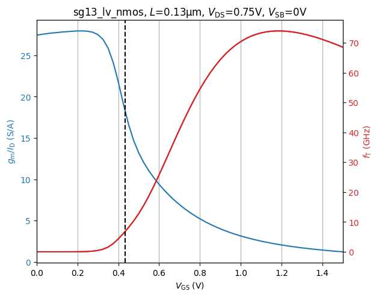
10.7.1 GM/ID Overview
Device sizing is a fundamental step in analog circuit design.Proper sizing ensures the desired trade-off between gain, bandwidth, power consumption, and linearity. A structured approach to sizing guarantees that the transistors operate in their optimal region—typically strong inversion and saturation for analog applications.
This section presents a basic OTA sizing methodology based on the work of Prepl, whose notebook is publicly available at GitHub: analog-circuit-design.
The notebook demonstrates a Python-based framework for calculating initial transistor dimensions in a basic OTA. Below is an explanation of the key steps, equations, and important code snippets from the sizing method, along with visual aids to clarify the process.
The sizing workflow follows these general steps:
- Define process parameters.
- Specify bias currents and overdrive voltages.
- Calculate width-to-length ratios (W/L) for each transistor.
- Determine transconductance, output resistance, and gain.
- Evaluate key performance metrics like slew rate and gain-bandwidth product.
At the beginning of the notebook, fundamental technology parameters are defined, including supply voltages, threshold voltages, mobility, and channel-length modulation factors for NMOS and PMOS transistors.
These parameters are critical for calculating transistor drain current in saturation:
\[ I_D = \frac{1}{2} \mu C_{ox} \frac{W}{L} (V_{GS} - V_{TH})^2 \]
The differential pair (M1 and M2) defines the input transconductance of the OTA. Sizing begins by selecting bias current and overdrive voltage (V\(_{OV}\)):
# Bias current for each NMOS transistor
ID1 = 100e-6 # [A]
# Overdrive voltage for M1 and M2
VOV1 = 0.2 # [V]
# Calculate W/L ratio for M1 and M2
WL1 = 2 * ID1 / (mu_n_Cox * VOV1**2)
print(f"W/L for M1 and M2: {WL1:.2f}")W/L for M1 and M2: 25.00In this example: - Bias current (ID1) is 100 µA per transistor. - Overdrive voltage (VOV1) is 0.2 V. - Calculated W/L ensures M1 and M2 operate in saturation with desired transconductance.
The tail current source (M5) provides total bias current to the differential pair:
# Tail current source sizing (M5)
ID5 = 200e-6 # Total bias current [A]
VOV5 = 0.2 # Overdrive voltage [V]
WL5 = 2 * ID5 / (mu_n_Cox * VOV5**2)
print(f"W/L for M5: {WL5:.2f}")W/L for M5: 50.00M5 carries the combined current of M1 and M2, typically twice ID1.
PMOS current mirrors (M3 and M4) act as active loads for the differential pair, impacting gain and output resistance:
# Load transistors sizing (M3 and M4)
ID3 = 100e-6 # [A]
VOV3 = 0.2 # [V]
WL3 = 2 * ID3 / (mu_p_Cox * VOV3**2)
print(f"W/L for M3 and M4: {WL3:.2f}")W/L for M3 and M4: 50.00Lowering overdrive voltage (V\(_{OV3}\)) increases output resistance, improving OTA voltage gain.
Once W/L ratios are calculated, device transconductance (g\(_m\)) and output resistance (r\(_o\)) are derived:
gm1 = mu_n_Cox * WL1 * VOV1 / 2
ro1 = 1 / (lambda_n * ID1)
ro3 = 1 / (lambda_p * ID3)
print(f"gm1: {gm1:.2e} S")
print(f"ro1: {ro1:.2e} Ω")
print(f"ro3: {ro3:.2e} Ω")gm1: 5.00e-04 S
ro1: 1.00e+05 Ω
ro3: 1.00e+05 ΩThe OTA’s DC gain is:
\[ A_v = g_{m1} \cdot (r_{o1} \parallel r_{o3}) \]
In Python:
Av = gm1 * (ro1 * ro3) / (ro1 + ro3)
print(f"Voltage gain A_v: {Av:.2f}")Voltage gain A_v: 25.00Evaluating Performance Metrics - Slew Rate and GBW:
Slew rate and gain-bandwidth product (GBW) predict OTA dynamic performance:
import numpy as np
CL = 1e-12 # Load capacitance [F]
# Slew rate calculation
SR = ID5 / CL
print(f"Slew Rate: {SR:.2e} V/s")
# Gain Bandwidth Product (GBW)
GBW = gm1 / (2 * np.pi * CL)
print(f"Gain Bandwidth Product: {GBW:.2e} Hz")Slew Rate: 2.00e+08 V/s
Gain Bandwidth Product: 7.96e+07 Hz- Slew Rate (SR): OTA’s ability to respond to large signals.
- Gain Bandwidth Product (GBW): Small-signal frequency response.
The presented methodology offers a systematic, reproducible approach to OTA design. Starting with hand calculations and validating through simulation helps designers optimize OTA performance while balancing speed, power, and gain. This lays groundwork for addressing noise, mismatch, and layout parasitics. Further information is publicly available at GitHub: analog-circuit-design.
11 Integrated Layouting
The following chapters describe how to design an integrated circuit using the software KLayout. An introduction and setup for the software will be given as well as some tips and tricks to easier work with the software.
11.1 Introduction into the fundamentals of integrated layouting.
Before designing on the wafer, the basics of the design process must be understood. To that end an explanation of the software as well as the physical layers is necessary to comprehend the design challenges.
When designing an integrated chip, the designer first needs to choose a technology. Each technology has different design rules and properties, which makes it suitable for the application. A technology usually comes with a process design kit (PDK). A PDK contains a device library, verification checks and technology data.
The device library contains the symbols used in the schematic and the PCells/devices used in the layout. The verification checks consist of the design rule check (DRC) as well as the layout vs. schematic (LVS). The technology data represents the basis of DRC and defines the physical constraints of the technology (see [21])
The used technology was the sg13g2 technology from IHP. Which is a BiCMOS technology with a 130nm minimum gate length. This PDK is open source and in a preview status (see [22])
To design the layout itself one first needs to be familiar with the different masks and the structure of a waver. The following is a simplified explanation of the different layers, their use and the manufacturing process behind it. For this report this is kept simple and will only focus on the layers used in the design. The simplified explenation was heavily inspired by the chapters 2 to 5 in CMOS by Jacaob Baker (see [16]).
The base is the bulk and a field oxide (FOX) layer on top of it. In this technology the bulk is a p-substrate. The FOX layer is an insulator, which separates devices from one another.
To make a device first the FOX layer needs to be opened (see Figure 11.1). That is done by etching away the FOX. The active mask allows the designer to specify the areas where the FOX will be opened. This is necessary for the doping process, which is usually done by an n- or p-select mask. In sg12g2 the n-select mask does not need to be specified. It is necessary to remove the FOX, otherwise the doping specified in the n-select mask will be stopped by the FOX. The select mask also needs to be bigger than the Active mask due to misalignment during the manufacturing process.
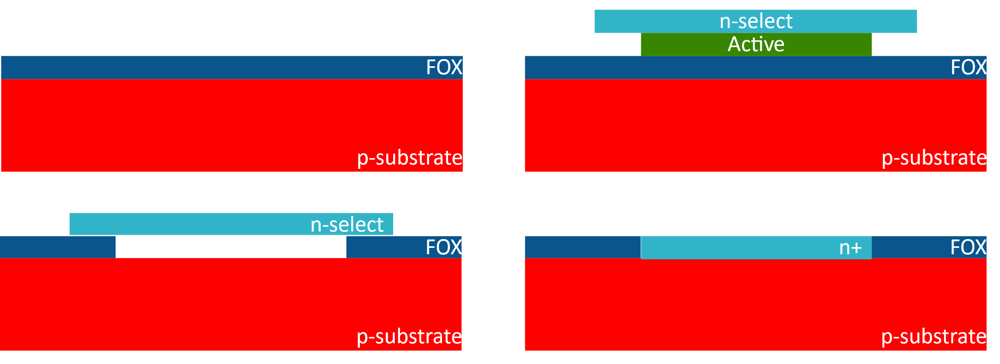
The next layer is the poly layer. The poly layer forms the gate of the transistors, the name is an abbreviation for Polysilicon. The poly can be routed like normal metal layers, with the exception that it is for more restive than the metal layers, so caution is advised for long poly traces.
In the manufacturing process the thick poly layer prevents the n-select mask to dope the part below the gate, therefore creating the drain and source regions of the nmos (see Figure 11.2).
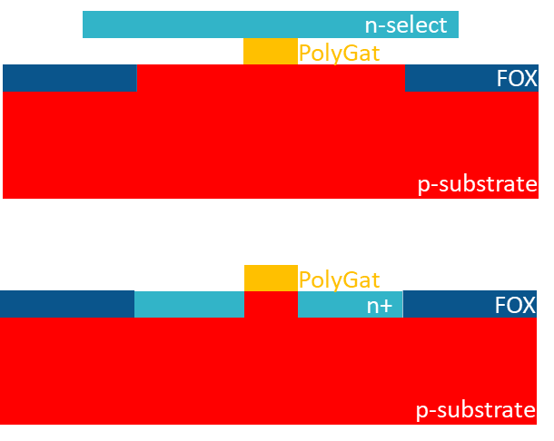
Also note that the drain and source contacts are interchangeable, as they are identical regions in the active area. The last two pictures showed how an NMOS device is formed. As mentioned before, the n-select mask doesn’t exist in the used PDK, but the p-select mask does exist with the label pSD.
As the PMOS is a negated NMOS, the designer first needs to place the p+ regions in an n-substrate. This is done by enveloping the transistor in an NWell. The NWell is a region that can be specified by the designer and works like an implant in the substrate. The FOX is also opened by the active layer but pSD layer is used to implant the p+ region (see Figure 11.3).
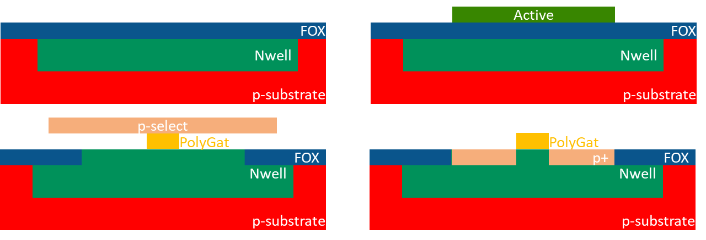
The N- or PMOS is formed in the bulk, but there are no electrical connections to the pins of the device. Connections between devices can be established using the poly or active layer, but both options are not advised. Therefore, the first metal layer is used for connections between devices. Connections from an active or poly layer region to the metal layer can´t be made by overlaying the layers as they are separated by an insulator. To connect these different layers the contact layer (Cnt) is used. It connects active or poly layer to the metal 1 layer, by removing the insulator over these regions (see Figure 11.4). Note that the first connection between these regions is always over the metal 1 layer. To switch between the different Metal layers, vias can be used, similar to a multilayer PCB design. These vias are formed by opening the insulator and placing in an conductor like tungsten the opening. In the figure this process is simplied.
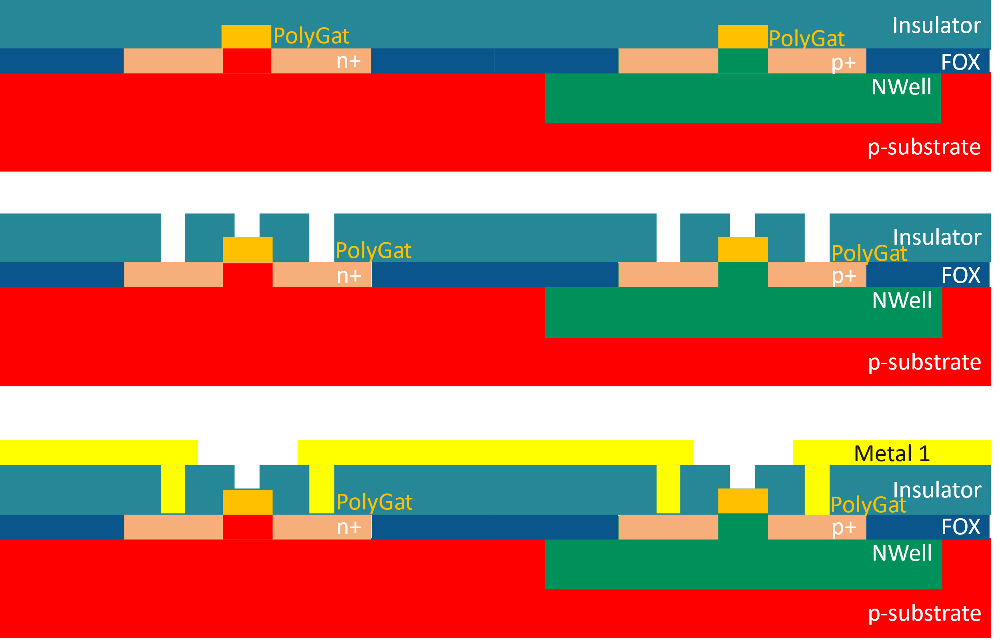
The MOSFET is a 4-pin device, consisting of source, gate, drain and body. While the body often is omitted on a schematic level, in the integrated layout the body of the MOSFET need to be tied to a defined potential. The body is also called the substrate or bulk, in case of a PMOS it is the NWell.
For the nmos this means connecting the substrate to VSS, while the NWell of a PMOS will be pulled to VDD. To have multiple locations to where the bulk or NWell connected to their potentials is advised.
The later chapters will work in the sg13g2 technology, the knowledge acquired in this chapter can be mapped to this technology. The figure (see Figure 11.5) compares the technology on the left, with the learned knowledge on the right. Note that the PWell is not used for NMOS devices only for ties.
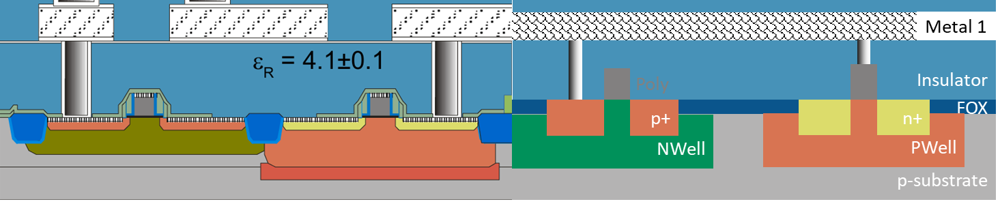
11.2 KLayout
The previous chapter described the fundamentals of the integrated layout, in this chapter these fundamentals are put into practice to create the layout for the 5T-OTA outlined by the schematic by Haraled Pretl(see [23])
The schematic outlined by Professor Pretl consists of 13 N- and PMOS devices. These devices are defined within the PDK and are the fundamental blocks, which make up the layout within the technology. Within the layout software these are defined as PCells. As the schematic designer works out the optimal design, one of the main variables to change the behaviour of the MOSFETs, is the w/l ratio. This ratio defines the width and length of the gate over the active area. These w/l ratios are crucial to the layout process, as they define the physical size of the devices. In the layout the w/l values were given by the calculation of Professor Pretel. These w/l ratios will be used to configure the PCells.
The layout program used is called KLayout. Similar to Xschem it works in a strict hierarchical system. As the layout of the 5T-OTA will be used in the Top-Level layout of the Biquad, the 5T-OTA itself is a cell, that can be called multiple times, throughout the layout of the Top-Level. To make it easier for the designer to connect the individual components of the Top-Level together, the 5T-OTA just uses the metal 1 layer. The interface points are the vias stacks. Therefore, making connections on the higher layers easier, as the individual cells for the 5T-OTA only reside on the most bottom layer.
In the following chapters DRC and LVS will be important concepts. DRC (Desing Rule Check) describes the process of comparing the physical layout to the constrains of the technology. This will throw an error, for example if a “trace” on the Metal1 layer is too thin. LVS (Layout Versus Schematic) describes the process of comparing the schematic to the layout. This will throw an error when two nets are shorted or a device it not correctly connected.
11.2.1 The Setup of KLayout
While the previous chapters showed only a cross section of the waver, the designer only sees the waver from a top view, but needs to recall the cross section, while working on the layout. This especially true for the layer that can be used as conductors.
This chapter will explain how to set up KLayout and the tools necessary to run DRC and LVS. It also shows an example way for a simple workflow.
Before the layout process begins it is paramount aggravate all the data files necessary. To do that create a new folder labelled Layout and copy your schematic design into this folder. Consider renaming your schematic into letters only. Do not use special character similar to UNIX symbols, only underscores are permitted.
To create a valid netlist, open the schematic in Xschem. Under simulation->LVS make sure that “LVS netlist + Top level is a .subckt” and “Upper case .SUBCKT and .ENDS” is selected.
After selecting these options, run the netlist and simulation. In the folder structure a new folder labelled simulations with file named “YOUR_PROJECT.spice” should appear. Copy that file into your main layout directory.
To begin designing create a new layout file called the same as the schematic by running “Klayout -e”. The argument -e opens Klayout in editing mode. To make the editing mode default, select File->Setup->Application->Editing Mode->Use editing mode by default.
To create a new layout, select “New Layout”. A wizard should appear that allows the selection of the technology. It is important to rename the Top Cell to match the name of your schematic so “YOUR_PROJECT”.
Please note that all the scripts later used are case sensitive, so consider this when renaming files.
Upon first saving, select the GDS file standard and name your file YOUR_PROJECT.GDS. The main layout directory should now contain YOUR_PROJECT.sch/.spice/.gds files. As well as a simulation folder. Now create a folder called LVS in this main layout directory.
For ease of access, create shell-script in your main layout folder to run LVS. The command saved with in the file should be:
python /foss/pdks/ihp-sg13g2/libs.tech/klayout/tech/lvs/run_lvs.py --netlist=YOUR_PROJECT.spice --layout=YOUR_PROJECT.gds --run_dir=LVS/Try running this command, to ensure it runs correctly. If it fails, saying something about “use_same_circuit”, check the names of your files, including the cell name of your layout. It’s crucial that all files are named the same.
This script will produce a. lvsdb file in the LVS directory. This file contains the comparison between the netlist of the schematic, as well as the extracted netlist of the layout.
As the design process is a constant back and forth with design and running LVS and DRC, these steps are necessary to ensure a good workflow.
Before designing we need to set up the tools in Klayout. For the DRC, open Macros->Macro Development and select DRC->[Technology sg13g2]->sg13g2_maximal. Copy the contents of this script and paste them into a new DRC script. Running this script will provide the “Marker Database Brower” from which the individual DRC errors can be selected. As the error names and a semi-detailed description can be found the “SG13G2_os_layout_rules.pdf” on the Github of IHP (see [24]).
To run LVS run the shell script and open the netlist browser under Tool->Netlist Browser. To see the LVS errors click on file->open and then navigate to /LVS/YOUR_PROJECT.lvsdb. This only needs to be done one time, as the LVS shell script will override the current .lvsdb file, when run anew. Select File->Reload to get the current LVS-data.
After loading the .lvsdb file the cross-reference tab will show the discrepancies between the netlists. This is because no layout has been created yet.
TipSome quality-of-life options
To provide a better overview of the used layers, right click on the right-hand side layer tab to open a pop up menu and select “hide empty layers”.
Disabling navigation by holding the middle mouse button: Check File->Setup->Navigation->Zoom and Pan->Mouse alt mode. This allows the control more similar to Autodesk Fusion or KiCad.
Disabling the zoom when pasting: File->Setup->Navigation->Zoom and select Pan->On paste->Pan to pasted objects. This option disables the full zoom to object, which can cause disorientation.
To show all the hierarchy and layers select Display->Full Hierarchy
To change to dark mode select File->Setup->Display->Background->Background Color->#42
The real layout process can now begin in Klayout. Different from PCB design, the symbols on the schematic side do not need to be matched to a footprint. Rather the symbol are the fundamental devices in the technology. To work with the devices of the technology open the library on the down-left under Libraries->SG13_dev. The list below shows the usable devices. By dragging and dropping them into the design, the devices are placed in the layout.
In previous chapters mentioned the w/l ratios will now play a role as the individual devices are configured. To configure a device or PCells, double click it and navigate to PCell parameters and enter the W/L ratios. Updating the PCell will change the device to the desired parameters.
11.3 The Layout Process
The workflow is much more incremental than in PCB design, as one implements device by device.
To that end, it is practical to copy the original schematic and delete the already placed devices, to maintain an overview of the progress. After every two to three cells, it is advised to run LVS and DRC.
Placing and configuring a device was already described, connecting devices is usually done by the Metal1 layer. It is advised to work with the metal layer alongside the hierarchy. So for the top level use the higher metal layers like Metal3 to Metal6, while for the lower levels use Metal1 to Metal2.
To connect different pins, use the LAYER.drawing layer. Conductors can either be the GatPoly or the Metal layers. Keep in mind that GatPoly.drawing has a higher resistance that Metal.drawing. To switch between the metal layers, use the device called “via_stack” and configure it accordingly.
To connect the gate of a MOS device the GatPoly needs to be connected to Metal1 through the Cnt layer. In contrast to the source and drain contacts this need to be done by hand. See (Figure 11.6) for a DRC clean connection of the gate of an NMOS device.
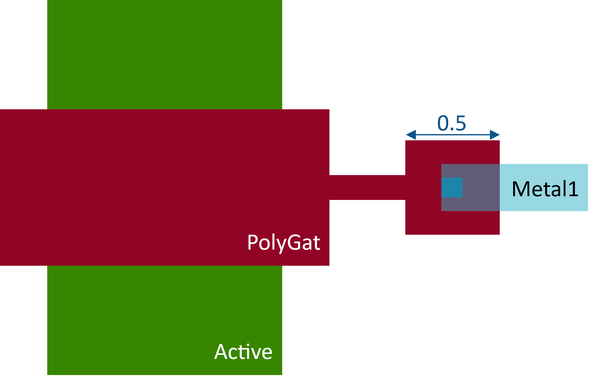
In general, connect each device separately from each other. It might be tempting to design the layout close together, with overlapping NWells, Active and GatPoly areas, but this will lead to both DRC and LVS errors, which will be difficult to address as each device is close together. This is especially true, when first learning the process.
The layout of the 5T-OTA was done in multiple iterations, each iteration taught valuable lessons. The next section presents these lessons, outlining a specific workflow and offering tips and guidance for beginners.
TipTips and tricks for the Layout Process.
Run LVS and DRC every 1 to 3 devices!
Aligning structures is easier when using a crosshair.
Enable this by checking View->Crosshair CursorUse the path tool whenever possible.
The tool has an adjustable width, which can be set on the bottom right menu.
Set this width to 0.16 um to route DRC free on most layers.
Do not use free form, as jagged shaped will create DRC errors.
Use the shift key to snap to constrain vertically or horizontally.
To change the layer of structure, select the desired layer, select the structure and press shift+L
Copying and pasting a structure will result in duplicating the structure in place. Use the move tool to separate both structures.
If things get too cluttered use the layer menu to declutter the interface.
Right clicking and selecting “Visibility follows selection” will only show the selected layer.
Setting different tabs for routing, DRC checking or overviewing the general layout is a good option to keep things tidy and readable
Changing the appearance of different layers is a good idea, especially for layers that overlap, like pSD or NWell.
Use the polygon only on special occasions as it is harder to clear of DRC errors.
NoteComing from discrete EDA software
The devices will not be placed automatically.
There is no way of changing the grid, as it is defined in technology.
There is no “Ratsnest” or “Airal Connections”.
There is no DRC in the background, short circuits will only be caught by running the LVS.
There is no net highlighting.
There are no zones, but their absence will cause DRC errors.
There is no dragging, moving a device always means moving the “traces” by hand with it.
There are no footprints, the PCells are the fundamental footprints defined by the technology.
Text size can’t be set but will adjust to the zoom level.
The GUI is sometimes not working, especially true for LVS.
11.3.1 Working with LVS during layouting
The Netlist Database Browser will provide an overview of all the nets both in the layout and the schematic or “Reference”. Each net has a number in brackets behind it. This number describes all the pins it is connected to. The netlists will only then match if these numbers are matched.
During the layout process it is paramount to use the LAYER.text layers and the text tool to assign labels to the GatPoly or Metal1 layers. To select these layers, one may need to show all layers under Layer->Show all. To keep the comparison in the netlist browser simple, name the nets of the layout according to the names of the nets in the schematic. Please refer to the designer’s etiquette, while labeling the layout or schematic (see [15]).
When working out the LVS it is advised to check mainly the devices in the list. This will provide a comprehensive overview of the devices, and the nets connected to them. Running LVS and DRC frequently will help with the overview.
It is normal that even the correctly wired devices are shown as errors. Especially the drain and source pins often swap places, which can’t be fixed by rotating the device. To clear the errors all nets connected to the device need to be cleared first. Only when all nets are correctly connected, will the device be clear of errors.
Having two nets on the same pit is always short circuit and should be handled with the highest priory.
After a few MOS devices are placed, LVS will throw an error as their body “pin” is not connected to a defined potential. In an prior chapter the process of tying down the substrate was already explained. In this technology the substrate is a p-substrate, this means the NWells need to be tied down and there must be multiple tying down points for the p-substrate (see Figure 11.7). Please note that the size of the masks shown has been altered for visibility reasons. Also note that each PMOS needs its own tie to the VDD potential, while the ties for the NMOS can be placed anywhere on the layout, as the substrate is the bulk.
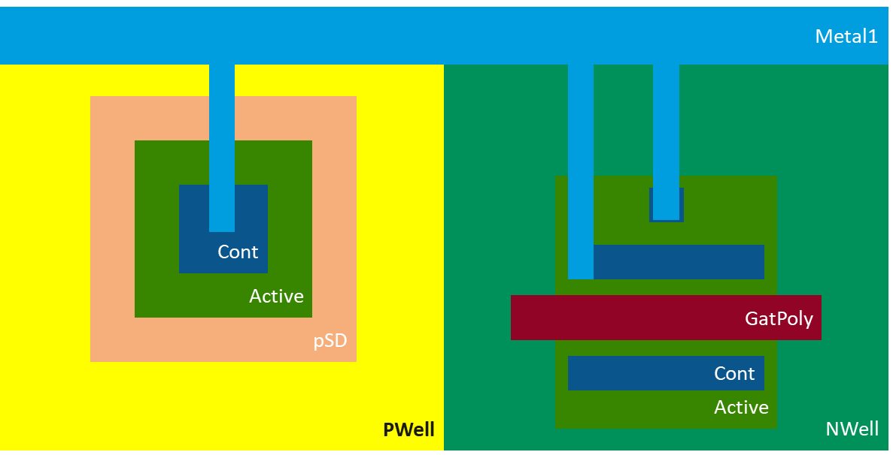
While using the netlist browser allows also for a rudimentary net highlighting in the layout. The practicality depends on the number of devices connected to the net. In general troubleshooting get more difficult, the more pins are connected to the same net.
11.3.2 Working with DRC during layouting.
Running the DRC often and addressing them as soon as possible, allows for a denser and generally more compact layout. It also reduces the time spend reworking the layout after all devices have been connected.
As described in set up chapter the “Marker Database Browser” is a built-in tool for addressing DRC errors. This tool shows the amount of DRC errors as well as the type. After following the steps described in the setup, one can open the Brower under Tool->Marker Browser. And running the DRC by selecting the run button.
The DRC will categorise in cells. Opening the DRC error log up will show the name of the error. Names link to the “SG13G2_os_layout_rules.pdf” by IHP. While KLayout also provides a description of the errors, it is best to use the DRC in conjunction with the DRC-PDF. The DRC-PDF provides context and dimensions for each error.
Working dually with the DRC-PDF and the DRC-Browser, allows the user to first clarify the DRC errors and than locate it by selecting it in the browser.
A very useful tool to clear DRC errors is the “partial” tool in the toolbar. This allows to modify structures after they are placed. This speed up the workflow immensely as the structures don’t need to redrawn.
Some DRC errors can’t be fixed at a given point of the design process. These DRC errors are usually due to density errors. But as the layout is not fully completed, cleaning these DRC errors has at best no impact on the design. Nevertheless, these errors must be cleared before the tape out.
11.4 The layout of the 5T-OTA
To design the 5T-OTA the schematic and the values of Professor Pretel were used (see [23]).
As the export functionality of KLayout is rather limited, it is best to open the .gds file in KLayout directly, but the is also a SVG in the layout folder.
While not very space efficient the layout followed the location of the MOSFETS in the schematic to ensure readability. This helped during the layout process, as it gave a clear structure to the layout. This also benefitted the understanding of the LVS and DRC during the layout immensely.
As space is one of main drivers of cost in IC design, a final version should be more mindful of the space used by the devices and traces. This would also clear the density errors, due to a higher density, because of the more compact design.
The design features multiple NWell and PWell Ties, to ensure that both bulks and NWell are connected to their potentials. Each PMOS-device has and NWell tie, which is closely located to the device. The PWell ties surround the design, as described in the introductory chapter to the integrated layout, the bulk shares one potential, but it is good practice to not use a star formation, to ensure this potential is evenly distributed.
One of the design goals of the design is the connection only on the first metal layer, this should ensure that the connection layers above are not influenced by the design. In addition, it provides a clear connection point for the top-level schematic.
The 5T-OTA.gds could easily be imported as cell into an arbitrary top- or mid-level design. Which concludes the design goal of this report.
11.5 Conclusion
This project took us from a theoretical modelling of the filter with transfer functions, to the first five-transistor prototype through two reference designs by Prof. Pretl and, finally, to a “advanced” OTA driving a gm-C biquad filter. On the way several problems were encountered:
Prototype OTA - The first try of implementing an OTA resulted in a schematic which was very error prone and took a long time in the debug process. During this time valueable insights were gained regarding transistor usage, hierarchical netlisting and transient and ac testing. In the end the prototype OTA was abandoned for a design from Prof. Pretl, as the required specifications could not be achieved with the prototype.
Pretl’s 5T-OTAs – Using the design for the 5T-OTA provided a good starting point for implementing the universal biquad filter. The width and length of the transistor channels were sized using the \(g_m/I_D\) method. Analysing this filter in the frequency domain revealed that the behaviour expected from the filter was not being simulated. The hypothesis here is that the OTAs could not provide enough gain for the circuit to work correctly.
Gm-C biquad – With that insight experience the next step was sizing a new OTA, embedded four copies in a Baker-style biquad, and verified low-pass behaviour in Ngspice. Although the filter has yet to reach textbook performance, the design flow until the AC analysis ran without critical errors.
Beyond the circuits themselves other issues were tackled in the IC design flow: Absolute path handling inside Docker, strict symbol classification, plain-text netlist debugging, and (just as important) team communication. Working through those issues was as valuable as the schematics that were produced.
11.6 Outlook
At the current status of the project the expected behaviour of an universal biquad could not be reproduced with self-build OTAs and the Gm-c differential OTA setup is also not producing an expected low pass filter. If the schematics are capable of producing an expected AC behaviour, those simulation could be compared to modelled behaviour to ensure correct operation behauviour. Additionally, the component stabiltiy analysis would be redone with the used sizing of the transistors to verify that the circuit is not prone to oszillations. All these checks are important to be done before tape-out, as the actual process of manufacturing an IC is time and ressource consuming and it is important to be sure, that the behaviour of the IC is what is wanted.
As the layout of the 5T-OTA is finished, the next steps are the import of the 5T-OTA Cell into the top-level layout. This can easily be achieved, as KLayout provides and import function, that was already tested. The design of the top-level should include the resistors and capacitors needed for the biquad. In addition, bonding pads need to be placed to connect the layout to a pin of the chosen package. LVS in the top-level will be a challenge, as the exported netlist must account for the hierarchy of the schematic. This will also extend the time needed to run the LVS-script. When the top-level is layouted, the remaining density DRC-violations need to be addressed. As the layout should be complete at this point this can be done by the fill tool provided in KLayout. In total only a little more work needs to be done on the layout, to get ready for an eventual tape out.
{kind=link}